Android学习笔记
Table of Contents
1 通用概念
1.1 Android框架图
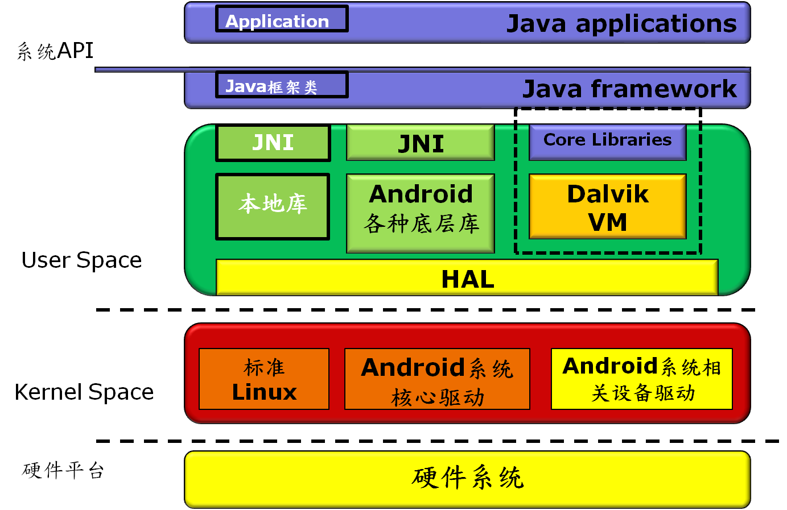
1.2 Android应用程序框架
1.3 UI基本开发
1.4 Fragment
1.5 进程与线程
Android世界的Process按优先级分为如下几类：
- Top
- Active
- High
- Visbile
- Service
Low
- Background
- Empty
进程的优先级从高到低依次分为五类，越往下，在内存紧张的时候越有可 能被系统杀掉。简而言之，越是容易被用户感知到的进程，其优先级必 定更高。
1.5.1 线程调度（Thread Scheduling）
Linux系统的调度器在分配time slice的时候，采用的 CFS（completely fair scheduler）策略。这种策略不但会参考单个 线程的优先级，还会追踪每个线程已经获取到的time slice数量，如 果高优先级的线程已经执行了很长时间，但低优先级的线程一直在等 待，后续系统会保证低优先级的线程也能获取更多的CPU时间。显然使 用这种调度策略的话，优先级高的线程并不一定能在争取time slice 上有绝对的优势，所以Android系统在线程调度上使用了cgroups的概 念，cgroups能更好的凸显某些线程的重要性，使得优先级更高的线程 明确的获取到更多的time slice。
Android将线程分为多个group，其中两类group尤其重要。一类是 default group，UI线程属于这一类。另一类是background group，工 作线程应该归属到这一类。background group当中所有的线程加起来 总共也只能分配到5～10%的time slice，剩下的全部分配给default group，这样设计显然能保证UI线程绘制UI的流畅性。
Android开发者需要显式的将工作线程归于background group以降低工 作线程的优先级：
new Thread( new Runnable() { @Override public void run() { Process.setThreadPriority(Process.THREAD_PRIORITY_BACKGROUND); } }).start();
所以在我们决定新启一个线程执行任务的时候，首先要问自己这个任 务在完成时间上是否重要到要和UI线程争夺CPU资源。如果不是，降低 线程优先级将其归于background group，如果是，则需要进一步的 profile看这个线程是否造成UI线程的卡顿。
1.5.2 启动线程
- new Thread()
这是Android系统里开线程最简单的方式，也只能应用于最简单的场 景，简单的好处却伴随不少的隐患。
public void runCode(View v) { log("Running code"); displayProgressBar(true); Runnable runnable = new Runnable() { @Override public void run() { Log.i(TAG, "run: starting thread for 4 seconds"); try { Thread.sleep(4000); } catch (InterruptedException e) { e.printStackTrace(); } Message message = new Message(); Bundle bundle = new Bundle(); bundle.putString(MESSAGE_KEY, "thread is complete"); message.setData(bundle); mHandler.sendMessage(message); } }; Thread thread = new Thread(runnable); thread.start(); }
这种方式仅仅是起动了一个新的线程，没有任务的概念，不能做状 态的管理。start之后，run当中的代码就一定会执行到底，无法中 途取消。
Runnable作为匿名内部类还持有了外部类的引用，在线程退出之前， 该引用会一直存在，阻碍外部类对象被GC回收，在一段时间内造成 内存泄漏。
没有线程切换的接口，要传递处理结果到UI线程的话，需要写额外 的线程切换代码。
如果从UI线程启动，则该线程优先级默认为Default，归于default cgroup，会平等的和UI线程争夺CPU资源。这一点尤其需要注意，在 对UI性能要求高的场景下要记得
Process.setThreadPriority(Process.THREAD_PRIORITY_BACKGROUND);
虽说处于background group的线程总共只能争取到5～10%的CPU资源， 但这对绝大部分的后台任务处理都绰绰有余了，1ms和10ms对用户来 说，都是快到无法感知，所以我们一般都偏向于在background group当中执行工作线程任务。
- AsyncTask
例子如下：
package com.example.android.concurrency; import android.os.AsyncTask; import android.os.Bundle; import android.support.v7.app.AppCompatActivity; import android.util.Log; import android.view.View; import android.widget.ProgressBar; import android.widget.ScrollView; import android.widget.TextView; public class MainActivity_Async extends AppCompatActivity { private static final String TAG = "CodeRunner"; // View object references private ScrollView mScroll; private TextView mLog; private ProgressBar mProgressBar; private MyTask mTask; private boolean mTaskRunning; @Override protected void onCreate(Bundle savedInstanceState) { super.onCreate(savedInstanceState); setContentView(R.layout.activity_main); // Initialize the logging components mScroll = (ScrollView) findViewById(R.id.scrollLog); mLog = (TextView) findViewById(R.id.tvLog); mProgressBar = (ProgressBar) findViewById(R.id.progress_bar); mLog.setText(R.string.lorem_ipsum); } // Run some code, called from the onClick event in the layout file public void runCode(View v) { if (mTaskRunning && mTask != null) { mTask.cancel(true); mTaskRunning = false; } else { mTask = new MyTask(); mTask.execute("Red", "Green", "Blue"); mTaskRunning = true; } } // Clear the output, called from the onClick event in the layout file public void clearOutput(View v) { mLog.setText(""); scrollTextToEnd(); } // Log output to logcat and the screen @SuppressWarnings("unused") private void log(String message) { Log.i(TAG, message); mLog.append(message + "\n"); scrollTextToEnd(); } private void scrollTextToEnd() { mScroll.post(new Runnable() { @Override public void run() { mScroll.fullScroll(ScrollView.FOCUS_DOWN); } }); } @SuppressWarnings("unused") private void displayProgressBar(boolean display) { if (display) { mProgressBar.setVisibility(View.VISIBLE); } else { mProgressBar.setVisibility(View.INVISIBLE); } } class MyTask extends AsyncTask<String, String, String> { @Override protected String doInBackground(String... strings) { for (String value : strings) { if (isCancelled()) { publishProgress("Cancelled"); break; } Log.i(TAG, "doInBackground: " + value); publishProgress(value); try { Thread.sleep(1000); } catch (InterruptedException e) { e.printStackTrace(); } } return "thread all done!"; } @Override protected void onProgressUpdate(String... values) { log(values[0]); } @Override protected void onPostExecute(String s) { log(s); } @Override protected void onCancelled() { log("Task cancelled"); } @Override protected void onCancelled(String s) { log("Cancelled with result " + s); } } }
和使用Thread()不同的是，多了几处API回调来严格规范工作线程与 UI线程之间的交互。我们大部分的业务场景几乎都符合这种规范，比 如去磁盘读取图片，缩放处理需要在工作线程执行，最后绘制到 ImageView控件需要切换到UI线程。
AsyncTask的几处回调都给了我们机会去中断任务，在任务状态的管 理上较之Thread()方式更为灵活。值得注意的是AsyncTask的 cancel()方法并不会终止任务的执行，开发者需要自己去检查cancel 的状态值来决定是否中止任务。
AsyncTask也有隐式的持有外部类对象引用的问题，需要特别注意防 止出现意外的内存泄漏。
AsyncTask由于在不同的系统版本上串行与并行的执行行为不一致， 被不少开发者所诟病，这确实是硬伤，绝大部分的多线程场景都需要 明确任务是串行还是并行。
线程优先级为background，对UI线程的执行影响极小。
- HandlerThhread
在需要对多任务做更精细控制，线程切换更频繁的场景之下， Thread()和AsyncTask都会显得力不从心。HandlerThread却能胜任 这些需求甚至更多。
HandlerThread将Handler，Thread，Looper，MessageQueue几个概 念相结合。Handler是线程对外的接口，所有新的message或者 runnable都通过handler post到工作线程。Looper在MessageQueue 取到新的任务就切换到工作线程去执行。不同的post方法可以让我 们对任务做精细的控制，什么时候执行，执行的顺序都可以控制。 HandlerThread最大的优势在于引入MessageQueue概念，可以进行多 任务队列管理。
HandlerThread背后只有一个线程，所以任务是串行执行的。串行相 对于并行来说更安全，各任务之间不会存在多线程安全问题。
HandlerThread所产生的线程会一直存活，Looper会在该线程中持续 的检查MessageQueue。这一点和Thread()，AsyncTask都不同， thread实例的重用可以避免线程相关的对象的频繁重建和销毁。
HandlerThread较之Thread()，AsyncTask需要写更多的代码，但在 实用性，灵活度，安全性上都有更好的表现。
- ThreadPoolExecutor
Thread(),AsyncTask适合处理单个任务的场景，HandlerThread适合 串行处理多任务的场景。当需要并行的处理多任务之时， ThreadPoolExecutor是更好的选择
// Run some code, called from the onClick event in the layout file public void runCode(View v) { for (int i = 0; i < 10; i++) { Runnable worker = new BackgroundTask(i); mExecutor.execute(worker); } }
public class BackgroundTask implements Runnable { public static final String TAG = "CodeRunner"; private int threadNumber; public BackgroundTask(int threadNumber) { this.threadNumber = threadNumber; } @Override public void run() { Log.i(TAG, Thread.currentThread().getName() + " start, thread number = " + threadNumber); try { Thread.sleep(5000); } catch (InterruptedException e) { e.printStackTrace(); } Log.i(TAG, Thread.currentThread().getName() + " end, thread number = " + threadNumber); } }
- IntentService
IntentService又是另一种开工作线程的方式，从名字就可以看出这 个工作线程会带有service的属性。和AsyncTask不同，没有和UI线 程的交互，也不像HandlerThread的工作线程会一直存活。 IntentService背后其实也有一个HandlerThread来串行的处理 Message Queue，从IntentService的onCreate方法可以看出：
@Override public void onCreate() { // TODO: It would be nice to have an option to hold a partial wakelock // during processing, and to have a static startService(Context, Intent) // method that would launch the service & hand off a wakelock. super.onCreate(); HandlerThread thread = new HandlerThread( "IntentService[" + mName + "]" ); thread.start(); mServiceLooper = thread.getLooper(); mServiceHandler = new ServiceHandler(mServiceLooper); }
只不过在所有的Message处理完毕之后，工作线程会自动结束。所以 可以把IntentService看做是Service和HandlerThread的结合体，适 合需要在工作线程处理UI无关任务的场景。
IntentService的一个使用实例：
package com.example.android.concurrency.services; import android.app.IntentService; import android.content.Intent; import android.content.Context; import android.support.v4.content.LocalBroadcastManager; import android.util.Log; public class MyIntentService extends IntentService { private static final String ACTION_FOO = "com.example.android.concurrency.action.FOO"; private static final String EXTRA_PARAM1 = "com.example.android.concurrency.extra.PARAM1"; private static final String EXTRA_PARAM2 = "com.example.android.concurrency.extra.PARAM2"; public static final String TAG = "CodeRunner"; public static final String SERVICE_MESSAGE = "ServiceMessage"; public static final String MESSAGE_KEY = "message"; public MyIntentService() { super("MyIntentService"); } public static void startActionFoo(Context context, String param1, String param2) { Intent intent = new Intent(context, MyIntentService.class); intent.setAction(ACTION_FOO); intent.putExtra(EXTRA_PARAM1, param1); intent.putExtra(EXTRA_PARAM2, param2); context.startService(intent); } @Override protected void onHandleIntent(Intent intent) { if (intent != null) { final String action = intent.getAction(); if (ACTION_FOO.equals(action)) { final String param1 = intent.getStringExtra(EXTRA_PARAM1); final String param2 = intent.getStringExtra(EXTRA_PARAM2); handleActionFoo(param1, param2); } } } private void handleActionFoo(String param1, String param2) { sendMessage("handleActionFoo: service started"); try { Thread.sleep(3000); } catch (InterruptedException e) { e.printStackTrace(); } sendMessage("handleActionFoo: service finished"); } @Override public void onCreate() { super.onCreate(); sendMessage("onCreate"); } @Override public void onDestroy() { super.onDestroy(); sendMessage("onDestroy"); } private void sendMessage(String message) { Intent intent = new Intent(SERVICE_MESSAGE); intent.putExtra(MESSAGE_KEY, message); LocalBroadcastManager.getInstance(getApplicationContext()) .sendBroadcast(intent); } }
在Activity可以通过如下方式调用上述IntentService，与UI Activity的通信 可以通过LocalBroadcastManager来进行.
BroadcastReceiver mReceiver = new BroadcastReceiver() { @Override public void onReceive(Context context, Intent intent) { String message = intent.getStringExtra(MyIntentService.MESSAGE_KEY); log(message); } }; // Run some code, called from the onClick event in the layout file public void runCode(View v) { log("Running code"); MyIntentService.startActionFoo(this, "Value 1", "Value 2"); }
- JobService
package com.example.android.concurrency; import android.app.job.JobParameters; import android.app.job.JobService; import android.content.Intent; import android.support.v4.content.LocalBroadcastManager; import android.util.Log; public class MyJobService extends JobService { public static final String TAG = "CodeRunner"; public MyJobService() { } @Override public boolean onStartJob(final JobParameters jobParameters) { Log.i(TAG, "onStartJob: " + jobParameters.getJobId()); // jobFinished(jobParameters, false); Runnable r = new Runnable() { @Override public void run() { try { Thread.sleep(2000); } catch (InterruptedException e) { e.printStackTrace(); } Log.i(TAG, "run: job complete"); LocalBroadcastManager.getInstance(getApplicationContext()) .sendBroadcast(new Intent("ServiceMessage")); jobFinished(jobParameters, false); } }; Thread thread = new Thread(r); thread.start(); return true; } @Override public boolean onStopJob(JobParameters jobParameters) { Log.i(TAG, "onStopJob: " + jobParameters.getJobId()); return false; } }
在Activity中可以通过LocalBroadcastManager与JobService之间进行通信：
private BroadcastReceiver mReceiver = new BroadcastReceiver() { @Override public void onReceive(Context context, Intent intent) { log("Job service message received"); } }; public void runCode(View v) { JobScheduler jobScheduler = (JobScheduler) getSystemService( Context.JOB_SCHEDULER_SERVICE); JobInfo jobInfo = new JobInfo.Builder(JOB_ID, new ComponentName(this, MyJobService.class)) .setMinimumLatency(0) .build(); jobScheduler.schedule(jobInfo); }
1.6 安全策略
在Android中,安全涵盖了应用程序的部署和执行.对于部署来 说,Android应用程序必须被赋予一个数字证书才允许被安装到某个设备中.对 于运行来说,每个应用程序都在一个独立的应用程序中执行,每个进程都有一 个唯一的永久的用户ID(在安装的时候分配的).
注册应用程序需要三样东西:
- 一个数字证书,
- 一个.apk文件
- 以及用于将数字签名应用到.apk文件的工具(jarsigner).
注册一个应用程序步骤如下:
- 使用Keytool创建一个自注册的证书.
步骤1 Create a folder to hold the keystore, for example
c:\android\release\.
步骤2 在命名行中执行如下命令:
keytool -genkey -v -keystore "FULL PATH OF release.keystore FILE FROM STEP 1" -alias androidbook -storepass paxxword -keypass paxxword -keyalg RSA -validity 14000
keytool的参数说明如下： 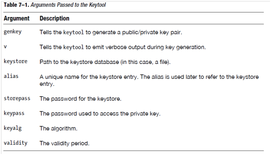
使用Jarsigner注册.apk文件
jarsigner -keystore "PATH TO YOUR release.keystore FILE" -storepass paxxword -keypass paxxword "PATH TO YOUR APK FILE" androidbook(别名)
用zipalign作字节对齐 命令如下:
zipalign –v 4 infile.apk outfile.apk
验证一个.apk文件是否是4字节对齐,用如下命令
zipalign –c –v 4 filename.apk
安装应用程序
adb install "PATH TO APK FILE GOES HERE"(安装) adb uninstall packagename(卸载) adb install –r "PATH TO APK FILE GOES HERE"(重装)
2 Framework
2.1 Audio System
2.1.1 Audio System 介绍
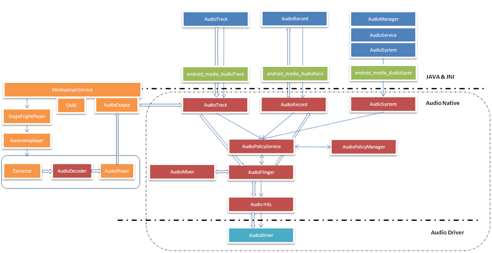
2.1.2 AudioTrack 介绍
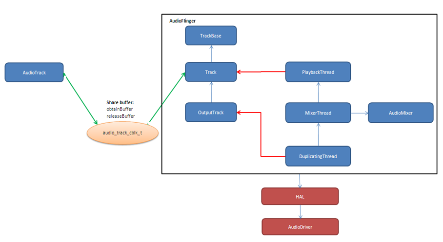
基本说明：
- 用于管理来自一个Source的Audio 播放将播放的Audio 数据送给 AudioFlinger
- 提供播放的控制接口 API:start(), stop(), …
- 提供Volume 控制接口， 用于控制L/R声道各自的Volume
- API: setVolume
- Android 体系中有3个Audio Volume控制, 最终的输出Volume是下面3
者的乘积
- Master Volume
- Stream Type Volume
- Track Volume
- AudioTrack可以配置为下面三种Mode：
- PUSH MODE
- PULL MODE
- STATIC MODE
AudioTrack测试程序
/** * 利用AudioTrack播放一个wav文件 */ //#define LOG_NDEBUG 0 #define LOG_TAG "AudioTrackTest" //#include <utils/Log.h> #include <media/AudioTrack.h> #include <system/audio.h> using namespace android; #define ALOGD printf int main(int argc, char *argv[]) { int readNum; unsigned short channel; unsigned int sampleRate; FILE *fp = fopen("bzk_chic.wav", "ab+"); if (fp == NULL) { ALOGD("Cannot open .wav file"); return -1; } ALOGD("Open wav file successfully!\n"); fseek(fp, 0x16, 0); readNum= fread(&channel, 1, 2, fp); if (readNum < 1) { ALOGD("Can not read channel number: %d\n", readNum); fclose(fp); return 0; } ALOGD("channel number is %d\n", channel); fseek(fp, 0x18, 0); readNum = fread(&sampleRate, 1, 4, fp); if (readNum < 1) { ALOGD("Cannot read sample rate: %d\n", readNum); fclose(fp); return 0; } ALOGD("Sample Rate is %d\n", sampleRate); // playing to an AudioTrack, set up mask if necessary audio_channel_mask_t audioMask = AUDIO_CHANNEL_OUT_STEREO; if (0 == audioMask) { return -1; } sp<AudioTrack> audioTrack = new AudioTrack( AUDIO_STREAM_MUSIC, sampleRate, AUDIO_FORMAT_PCM_16_BIT, audioMask, 0, AUDIO_OUTPUT_FLAG_NONE); status_t status = audioTrack->initCheck(); if(status != NO_ERROR) { audioTrack.clear(); ALOGD("Failed for initCheck()"); return -1; } audioTrack->start(); unsigned char *buffer = new unsigned char[channel * 64 * 2]; while (1) { readNum = fread(buffer, 1, channel * 64 * 2, fp); if (readNum <= 0) break; ALOGD("Write data : %d to AudioTrack", readNum); audioTrack->write(buffer, readNum); } fclose(fp); delete []buffer; audioTrack->stop(); }
2.1.3 AudioRecord介绍
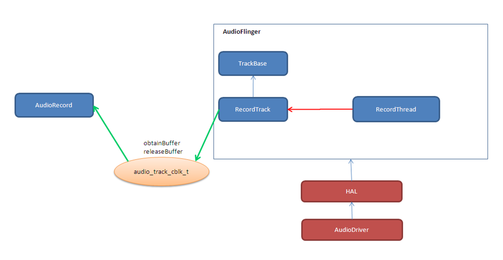
基本说明：
- 用于管理从底层获取录音数据，并提供给上层
- 提供录音的控制接口 API:start(), stop()
- 获取声音资料的方式
- 由上层主动调用AudioRecord::read() 来获取数据 (PULL MODE)
- 上层提供Callback function, 通过AudioRecord主动将资料通过 Callback 给上层(PUSH MODE)
2.1.4 AudioPolicyService介绍
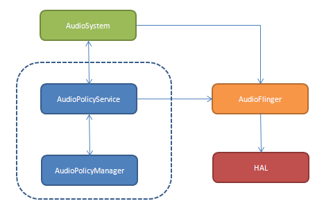
AudioPolicyService在Audio system中的位置和作用
- 仅是一个行为决策者，而不是行为的实施者
- 真正的实施者为AudioFlinger
- 它是一个在后台进程中的服务实体，提供的服务就是告诉实施者要怎么去 做
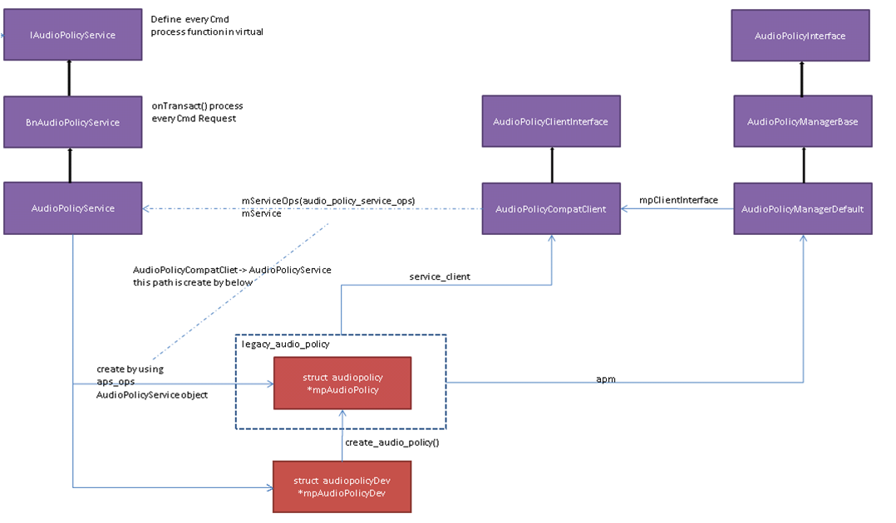
AudioPolicyService几大功能:
- 设备状态管理
- 输入输出策略管理
- 音量控制管理
- Effect 控制管理
2.1.5 AudioFlinger
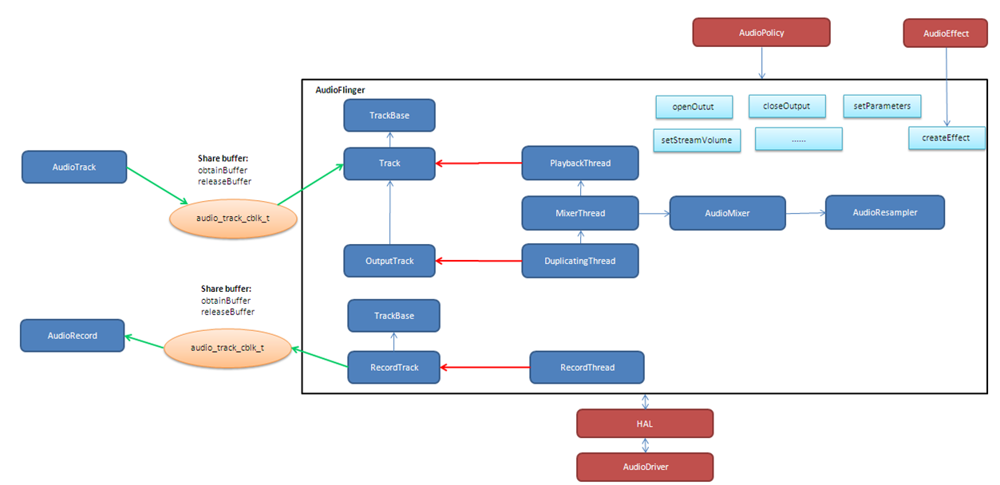
AudioFlinger的线程循环逻辑如下所示：
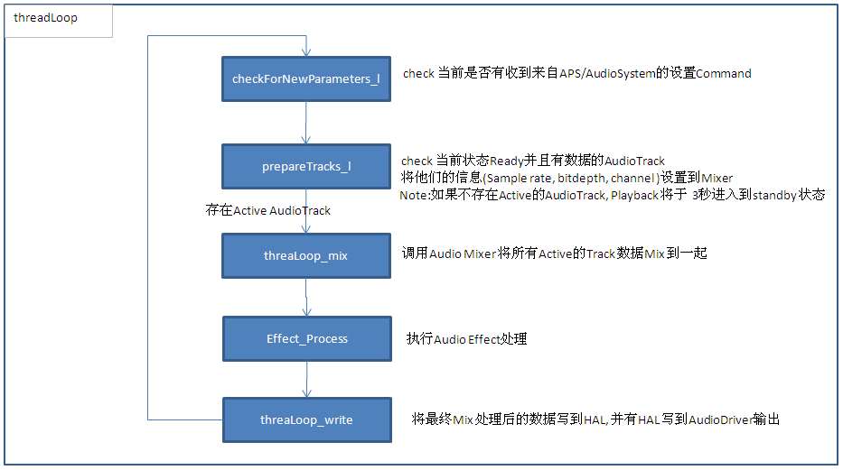
2.2 Media Framework
2.2.1 基础知识
AMessage代表一个消息，对应一个target， 根据这个target可以知道对 应的消息应该归哪个AHandler去处理。
AHandler是处理消息的基类，它有一个id，处理与这个id相关联的AMessage，
在 onMessageReceived 函数中处理各种消息。
从AHandler派生的类，都会重写该方法，以处理各种消息。
有一个全局的 ALooperRoster 对象，它维护了系统中存在的 AHandler对
象。
ALooper对象，通过 registerHandler 接口将AHandler对象注册给
ALooperRoster 对象维护的AHandler列表中。
2.2.2 主要代码路径
- MediaPlayer.java
- Java 层的 MediaPlayer 接口，APK 主要通过 call 它的接口实现播放功能
- code path: framework/base/media/java/android/media/MediaPlayer.java
- Media JNI
- MediaPlayer java 层与 native 层的接口
- code path: framework/base/media/jni/android_media_MediaPlayer.cpp
- output:libmedia_jni.so
- MediaPlayer
- MediaPlayer Native 层 client 端接口
- code path: framework/av/media/libmedia/
- output:libmedia.so
- Media Service
- Native 层真正实现播放功能的 Service 进程
- code path: framework/av/media/mediaserver framework/av/media/libmediaplayerservice
- output: mediaserver libmediaplayerservice.so
2.2.3 Stagefright
- StagefrightPlayer
- 负责提供 player 的接口
- code path: framework/av/media/libmediaplayerservice/StagefrightPlayer.cpp
- AwesomePlayer
- 真正实现 playback 功能的模块
- code path: : framework/av/media/libstagefright
- DataSource
- 提供 Source 数据，可以是本地文件，也可以是网络数据
- code path: : framework/av/media/libstagefright
- MediaSource
- MediaSource使用到了DataSoure和OMX，可以提供解码后的供显示的数据
- code path: framework/av/media/libstagefright/
- OMXClient
- 使用 OMX 的 client 端
- code path: framework/av/media/libstagefright/
- OMX
- 提供一套接口接到底层的 decoder 进行解码
- code path: framework/av/media/libstagefright/omx
2.2.4 NuPlayer
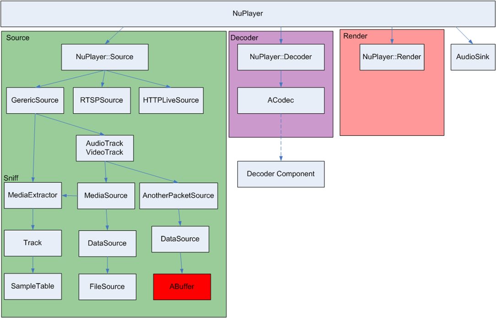
2.2.5 OpenMAX
OpenMAX is a royalty-free, cross-platform API. OpenMAX Working Group has been formed by the Khronos Group. The Standard for Media Library Portability. Reduce the cost and complexity of porting multimedia software to new processors and architectures. 分为 OpenMAX DL, IL, AL 三层，Android 上只用到 OpenMAX IL.
2.3 Graphics
2.3.1 Android Graphics Pipeline Overview
- Android Graphics Pipeline
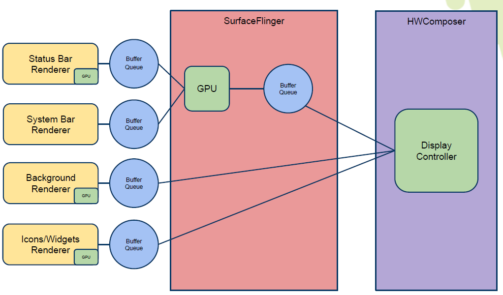
如图，对于一些Buffer，有些通过GPU处理后，再送给HWComposer，有些则 直接送给HWComposer处理。
- BufferQueue
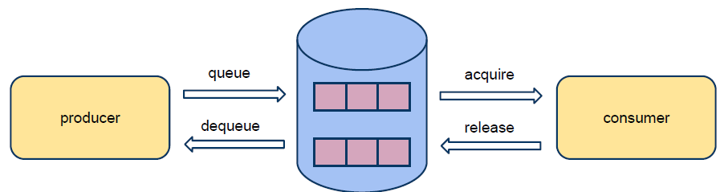
关于BufferQueue的说明如下：
- manages flow of buffers between producers and consumers
- two queues
- producers dequeue unused buffers, fill them, then queue them
- consumers acquire filled buffers, use them, then release them when done.
- SurfaceFlinger
它的主要使用是：
- Responsible for compositing all windows into the display(s)
- Just another GL client
- HW Composer
一开始是为了加速叠图而准备的一个HAL，目前作为所有显示的HAL。
- Overlay
- Overlay 是什么
在android 上面，屏幕上输出的画面都是由多个图层（layer）合成 （compsing）得到的结果. 所以在android上面，图像的合成是非常普 通而且常见(频繁)的操作, 如果有一个简单而省电的hardware(hw)来负 责图像合成, 可以很有效的降低功耗,而且也可以降低GPU的loading.
Overlay 就是一个专门负责图像合成的一个hw. 相比GPU 而言, overlay 是一个非常简单图像处理hw. 和GPU具有的庞大的图形功能不 同, overlay只能负责简单的图像合成动作.
由于overlay 功能简单,所以hw的实现上相比GPU也要简单很多,工作起 来也会非常省电.
- Overlay 有什么限制
由于overlay hw很简单，所以它只能处理简单的图像合成工作，太复杂 的图像合成工作还是要GPU来协助完成.
overlay 无法处理的case：
- 需要旋转的图像
- 需要缩放的图像
- 图层超过4层
不过对于普通的android应用场景来说,很少会出现上述的那些cases.
- 没有overlay HW，图像合成流程
Surfaceflinger把需要合成的layers 交给GPU 做composing, 最终输出 到屏幕。
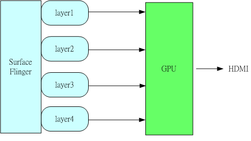
- 有Overlay HW, 图像合成的流程
Surfaceflinger把需要合成的layers 交给ovl做composing, 最终输出 到屏幕。
- 有overlay HW,但需要GPU做图像合成流程
Overlay不能处理的layers, 会交给GPU做图像合成，GPU把图像合成为 一个layer, 然后再通过overlay 输出.
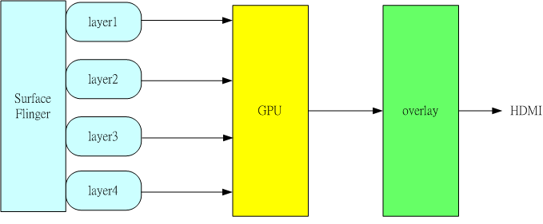
- Overlay 是什么
- Overlay
2.3.2 Android Sync Framework
- 定义
Synchronization between consumers and producers who are from different hardware components to use a buffer atomically
- 应用背景
在复杂的DMA管线如图形管线（多媒体，摄像头，GPU以及显示设备），一 个buffer的消费者需要知道生产者什么时候完成生产（即创建一个Buffer, 并往里面放置消费者所需要的数据）。同样地，生产者也需要知道消费者 什么时候使用它创建的Buffer，以便它可以重新使用这个Buffer。而且， 一个Buffer可能被多个不同的消费者使用不同的时间。另外，一个消费者 可能需要互斥地消费多个Buffer，等等，有一个问题应运而生，就是如何 保证多个消费者之间同步使用Buffer，以及生产者与消费者协调使用 Buffer。因为Buffer是一个共享资源，且任何消费者或生产者对Buffer的 使用都是排他性的（因为它们属于不同的硬件单元或模块），大体看来， 需要解决如下两个问题：
- 消费者与生产者之间对Buffer的同步访问。
- 消费者之间对Buffer的同步访问。
- 目标
- Provide a simple API to let components signal when buffers are ready/released.
- Allow synchronization primitives to be passed between processes and between userspace and the kernel.
- Allow implementers to exploit hardware sync support
- Provide visibility into the graphics pipeline for debugging
- Software Stacks
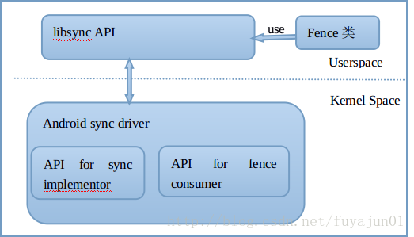
- 实现
sync_timeline
- Represents monotonically increasing counter
- Generally one instance per driver context
- allows hardware specific implementation
- sw_sync implementation provided
sync_pt
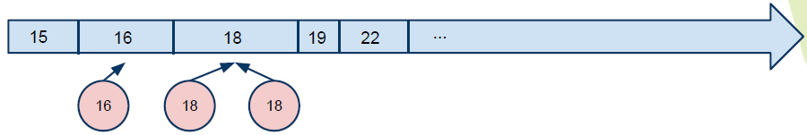
- Represents a specific values on a parent timeline
- 3 states
- active
- signaled
- error
- starts active and transitions once to either signaled or error
sync_fence
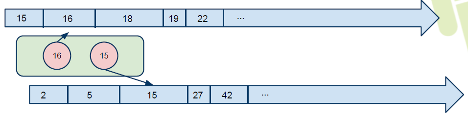
- A collection of sync_pts
- Backed by a file and can be passed to userspace.
- Main primitive drivers and userspace use to describe sync events/dependencies.
- Fences are a promise by the kernel
- that work has been queued
- and will complete in a "timely" manner
- Starts active and transitions to signaled with all of its sync_pts become signaled or one becomes errored
- The list of sync_pts is immutable after fence creation
- A sync_pt can only be in one fence.
- Two fences can be merged to create a third fence containing copies of the sync points in both.
- Sync Merge
Before Merge
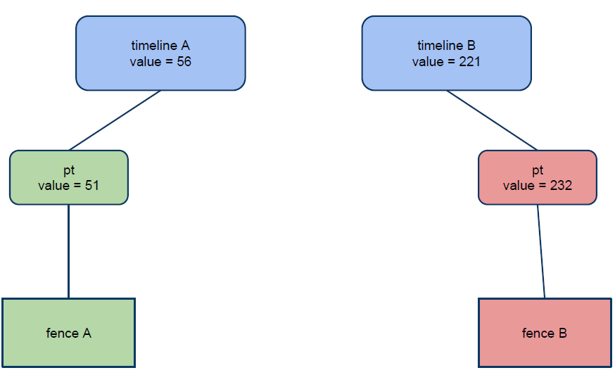
After Merge
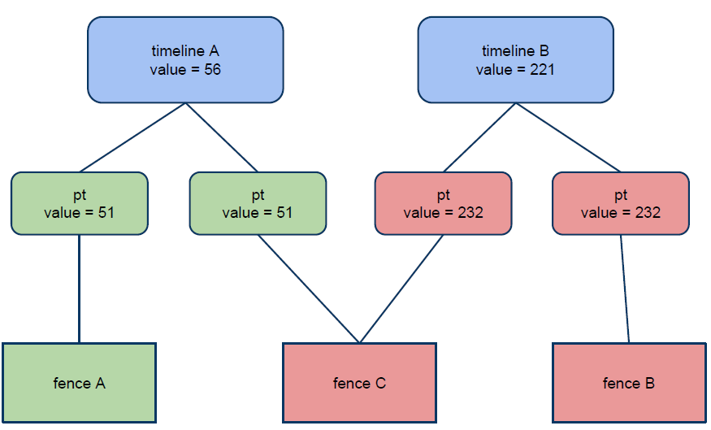
- 代码
- supported in android-3.10 kernel + staged for quite some time
- Core
drivers/staging/android/sync.cdrivers/staging/android/sync.h
- sw_sync
drivers/staging/android/sw_sync.cdrivers/staging/android/sw_sync.h
接口声明
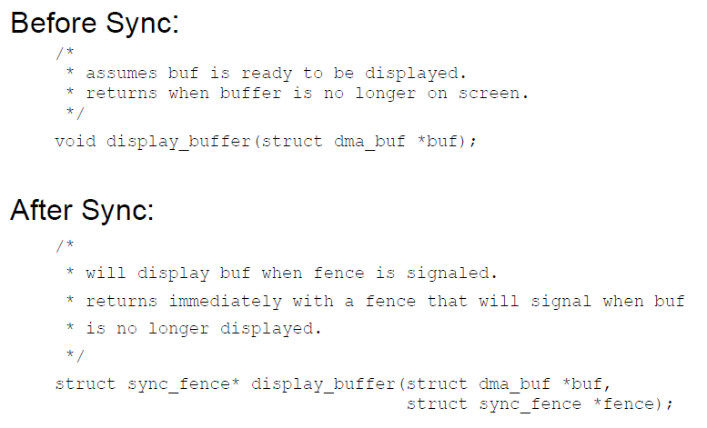
实现sync_timeline的建议
在实现前，先考虑是否可以直接使用sw_sync, 以sw_sync为起点。
- Don'ts
- Don't base a timeline on any "real" time.
- Don't allow userspace to explicitly
- create a fence
- signal a fence
- Don't access sync_timeline, sync_pt, or sync_fence elements explicitly.
- Dos
- Do provide useful names
- Do implement timeline_value str and pt_value_str
- Do implement fill driver_data
- Don'ts
2.4 Input System
Input Event Process Flow
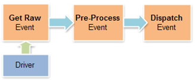
2.4.1 Architecture (ICS)
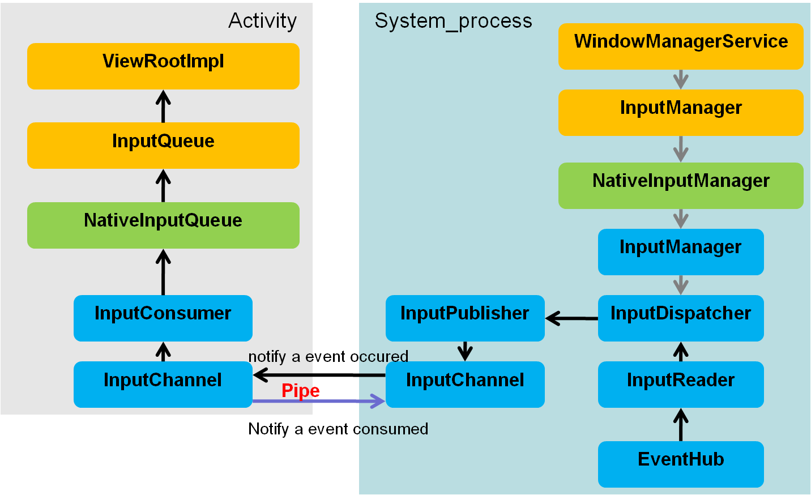
2.4.2 Architecture (JB)
2.5 Wifi Framework
Android L中Framework为了保证设备在移动过程中，能够连接到新的AP，
针对不支持Background Scan的设备，在WifiStateMachine中定义了一个
变量 mDefaultFrameworkScanIntervalMs ，默认初始化为
config_wifi_framework_scan_interval , 这个值是在
frameworks\base\core\res\res\values\config.xml 文件中定义的，默
认值为 30s。
学习计划：
- 先按顺序分析每个类
- 总结重点流程
2.5.1 Common
2.5.2 传统WiFi
Android Framework中的wifi代码分为两部分，一部分面向应用开发者，提供 公共接口给应用开发者，另一部分则是框架的实现灵魂，代码分别位于： Android 5.1
- frameworks\base\wifi\java\android\net\wifi
- frameworks\opt\net\wifi\service
- WifiScanningServiceImpl
- Scan周期
config_wifi_supplicant_scan_intervalconfig_wifi_framework_enable_associated_autojoin_scan关联 后是否允许扫描 - 无网络时的行为
当系统没有连接上任何网络时，且没有保存过的网络信息时，，这个命令
CMD_NO_NETWORKS_PERIODIC_SCAN会执行一个周期性的扫描来通 知用户当前有哪些开放网络。 - WifiServiceImpl
- 代码实例
Connect to Wi-Fi with WEP encryption
public boolean ConnectToNetworkWEP( String networkSSID, String password ) { try { WifiConfiguration conf = new WifiConfiguration(); conf.SSID = "\"" + networkSSID + "\""; // Please note the quotes. String should contain SSID in quotes conf.wepKeys[0] = "\"" + password + "\""; //Try it with quotes first conf.allowedKeyManagement.set(WifiConfiguration.KeyMgmt.NONE); conf.allowedGroupCiphers.set(WifiConfiguration.AuthAlgorithm.OPEN); conf.allowedGroupCiphers.set(WifiConfiguration.AuthAlgorithm.SHARED); WifiManager wifiManager = (WifiManager) this.getApplicationContext().getSystemService(Context.WIFI_SERVICE); int networkId = wifiManager.addNetwork(conf); if (networkId == -1){ //Try it again with no quotes in case of hex password conf.wepKeys[0] = password; networkId = wifiManager.addNetwork(conf); } List<WifiConfiguration> list = wifiManager.getConfiguredNetworks(); for( WifiConfiguration i : list ) { if(i.SSID != null && i.SSID.equals("\"" + networkSSID + "\"")) { wifiManager.disconnect(); wifiManager.enableNetwork(i.networkId, true); wifiManager.reconnect(); break; } } //WiFi Connection success, return true return true; } catch (Exception ex) { System.out.println(Arrays.toString(ex.getStackTrace())); return false; } }
Connect to Wi-Fi with WPA2 encryption
public boolean ConnectToNetworkWPA( String networkSSID, String password ) { try { WifiConfiguration conf = new WifiConfiguration(); conf.SSID = "\"" + networkSSID + "\""; // Please note the quotes. String should contain SSID in quotes conf.preSharedKey = "\"" + password + "\""; conf.status = WifiConfiguration.Status.ENABLED; conf.allowedGroupCiphers.set(WifiConfiguration.GroupCipher.TKIP); conf.allowedGroupCiphers.set(WifiConfiguration.GroupCipher.CCMP); conf.allowedKeyManagement.set(WifiConfiguration.KeyMgmt.WPA_PSK); conf.allowedPairwiseCiphers.set(WifiConfiguration.PairwiseCipher.TKIP); conf.allowedPairwiseCiphers.set(WifiConfiguration.PairwiseCipher.CCMP); Log.d("connecting", conf.SSID + " " + conf.preSharedKey); WifiManager wifiManager = (WifiManager) this.getApplicationContext().getSystemService(Context.WIFI_SERVICE); wifiManager.addNetwork(conf); Log.d("after connecting", conf.SSID + " " + conf.preSharedKey); List<WifiConfiguration> list = wifiManager.getConfiguredNetworks(); for( WifiConfiguration i : list ) { if(i.SSID != null && i.SSID.equals("\"" + networkSSID + "\"")) { wifiManager.disconnect(); wifiManager.enableNetwork(i.networkId, true); wifiManager.reconnect(); Log.d("re connecting", i.SSID + " " + conf.preSharedKey); break; } } //WiFi Connection success, return true return true; } catch (Exception ex) { System.out.println(Arrays.toString(ex.getStackTrace())); return false; } }
2.5.3 P2P/Miracast
- WifiP2pServiceImpl
连接一个 p2p设备的大致调用序列是(WifiP2pManager)：
- discoverPeers() 主要是下p2p find命令，打到对端设备的一些 信息
- connect() 这个函数调用涉及到GO协商， WPS交互， 关联以及4步握手过程 直到p2p GO/GC设备连接成功。
示例代码：
/** * A base class for connection request test. */ public abstract class ConnectReqTestCase extends ReqTestCase { protected P2pBroadcastReceiverTest mReceiverTest; public ConnectReqTestCase(Context context) { super(context); } /** * Set up the test case. */ protected void setUp() { super.setUp(); mReceiverTest = new P2pBroadcastReceiverTest(mContext); mReceiverTest.init(mChannel); try { Method[] methods = WifiP2pManager.class.getMethods(); for (int i = 0; i < methods.length; i++) { if (methods[i].getName().equals("deletePersistentGroup")) { // Delete any persistent group for (int netid = 0; netid < 32; netid++) { methods[i].invoke(mP2pMgr, mChannel, netid, null); } } } } catch(Exception e) { e.printStackTrace(); } // Disconnect from wifi to avoid channel conflict mWifiMgr.disconnect(); } /** * Tear down the test case. */ protected void tearDown() { super.tearDown(); if (mReceiverTest != null) { mReceiverTest.close(); } if (mP2pMgr != null) { mP2pMgr.cancelConnect(mChannel, null); mP2pMgr.removeGroup(mChannel, null); } } /** * Tries to connect the target devices. * @param isJoin if true, try to join the group. otherwise, try go negotiation. * @param wpsConfig wps configuration method. * @return true if succeeded. * @throws InterruptedException */ protected boolean connectTest(boolean isJoin, int wpsConfig) throws InterruptedException { notifyTestMsg(R.string.p2p_searching_target); /* * Search target device and check its capability. */ ActionListenerTest actionListener = new ActionListenerTest(); mP2pMgr.discoverPeers(mChannel, actionListener); if (!actionListener.check(ActionListenerTest.SUCCESS, TIMEOUT)) { mReason = mContext.getString(R.string.p2p_discover_peers_error); return false; } WifiP2pDevice dev = mReceiverTest.waitDeviceFound(mTargetAddress, TIMEOUT); if (dev == null) { mReason = mContext.getString(R.string.p2p_target_not_found_error); return false; } if (!isJoin && dev.isGroupOwner()) { // target device should be p2p device. mReason = mContext.getString(R.string.p2p_target_invalid_role_error); return false; } else if (isJoin && !dev.isGroupOwner()) { //target device should be group owner. mReason = mContext.getString(R.string.p2p_target_invalid_role_error2); return false; } if (wpsConfig == WpsInfo.PBC) { notifyTestMsg(R.string.p2p_connecting_with_pbc); } else { notifyTestMsg(R.string.p2p_connecting_with_pin); } /* * Try to connect the target device. */ WifiP2pConfig config = new WifiP2pConfig(); config.deviceAddress = dev.deviceAddress; config.wps.setup = wpsConfig; mP2pMgr.connect(mChannel, config, actionListener); if (!actionListener.check(ActionListenerTest.SUCCESS, TIMEOUT)) { mReason = mContext.getString(R.string.p2p_connect_error); return false; } /* * Check if the connection broadcast is received. */ WifiP2pInfo p2pInfo = mReceiverTest.waitConnectionNotice(TIMEOUT_FOR_USER_ACTION); if (p2pInfo == null) { mReason = mContext.getString(R.string.p2p_connection_error); return false; } /* * Wait until peer gets marked conencted. */ notifyTestMsg(R.string.p2p_waiting_for_peer_to_connect); if (mReceiverTest.waitPeerConnected(mTargetAddress, TIMEOUT) != true) { mReason = mContext.getString(R.string.p2p_connection_error); return false; } /* * Remove the p2p group manualy. */ mP2pMgr.removeGroup(mChannel, actionListener); if (!actionListener.check(ActionListenerTest.SUCCESS, TIMEOUT)) { mReason = mContext.getString(R.string.p2p_remove_group_error); return false; } notifyTestMsg(R.string.p2p_waiting_for_peer_to_disconnect); /* * Check if p2p disconnection broadcast is received */ p2pInfo = mReceiverTest.waitDisconnectionNotice(TIMEOUT); if (p2pInfo == null) { mReason = mContext.getString(R.string.p2p_connection_error); return false; } /* Wait until peer gets marked disconnected */ if (mReceiverTest.waitPeerDisconnected(mTargetAddress, TIMEOUT) != true) { mReason = mContext.getString(R.string.p2p_detect_disconnection_error); return false; } return true; } }
这个时候，对端设备会弹出Invitation to connect 的提示框，点击 接受后，会向wifi p2p状态机发送
PEER_CONNECTION_USER_ACCEPT消失。 （notifyInvitationReceived）事实上，Wifi p2p 状态机在收到如下几个事件时，都会弹出确认对 话框：
P2P_PROV_DISC_PBC_REQ_EVENTP2P_PROV_DISC_ENTER_PIN_EVENTP2P_PROV_DISC_SHOW_PIN_EVENTP2P_GO_NEGOTIATION_REQUEST_EVENTP2P_INVITATION_RECEIVED_EVENT
- 开启WifiSink的调用序列
DisplayManager.requestEnableSink DisplayManager.enableSink DisplayManagerGlobal.enableSink DisplayManagerService.enableSink DisplayManagerService.enableSinkInternal WifiDisplayAdapter.requestEnableSinkLocked WifiDisplayController.requestEnableSink
WifiDisplaySinkActivity WfdSinkSurfaceFragment WfdSinkExt.setupWfdSinkConnection WfdSinkExt.setWfdMode(true) WifiDisplayAdapter.requestEnableSinkLocked … WifiDisplayController.startWaitConnection WifiDisplayController.enterSinkState
2.5.4 SoftAp
NetworkManagementService服务启动hostapd
WifiStateMachine在InitialState中收到 CMD_START_AP ，
变量 mWifiApState跟踪了SoftAp的状态
调用流程： WifiManager.setWifiApEnabled -> WifiServiceImpl.setWifiApEnabled : Send CMD_SET_AP to WifiController -> WifiController 在ApDisabledState处理上述消息，调用 WifiStateMachine.setHostApRunning -> WifiStateMachine向自己发送 CMD_START_AP -> startSoftApWithConfig最终调用NetworkManagerService的 startAccessPoint
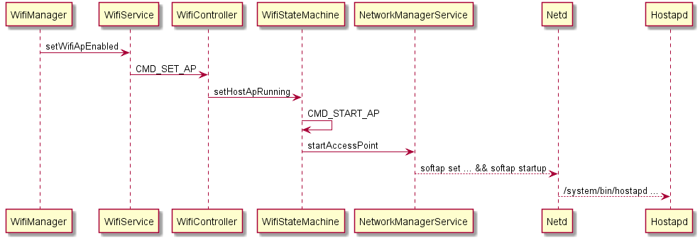
WifiStateMachine与SoftAp相关的状态为： addState(mSoftApStartingState, mDefaultState); addState(mSoftApStartedState, mDefaultState); addState(mTetheringState, mSoftApStartedState); addState(mTetheredState, mSoftApStartedState); addState(mUntetheringState, mSoftApStartedState);
2.5.5 主要流程总结
2.6 Global Settings
设置和访问一个全局变量。
2.6.1 Settings.java
//frameworks/base/core/java/android/provider/Settings.java public final class Settings { public static final String WIFI_AUTO_CONNECT = "wifi_auto_connect"; ... MOVED_TO_GLOBAL.add(Settings.Global.WIFI_AUTO_CONNECT); }
2.6.2 defaults.xml
<!--framework/bas /packages/SettingsProvider/res/values/defaults.xml --> <integer name="def_wifi_auto_connect">0</integer>
2.6.3 DatabaseHelper.java
public class DatabaseHelper extends SQLiteOpenHelper { ... loadIntegerSetting(stmt, Settings.Global.WIFI_AUTO_CONNECT, R.integer.def_wifi_auto_connect); ... }
2.6.4 访问
//读取 Settings.Global.getInt(mContext.getContentResolver(), Settings.Global.WIFI_AUTO_CONNECT); //写入 Settings.Global.putInt(getContentResolver(), Settings.Global.WIFI_AUTO_CONNECT, 0);
3 我的技术文摘
3.1 编写native activity
android/native_activity.h 提供的本地活动接口是基于应用程序提供的
一系列回调函数, 这些回调函数将在相应事件发生，在活动的主线程中调用，
所以这些回调函数不能阻塞。
理论上，我们只要编写相应的回调函数就可以了，方法简单， 直接了当，但
是，非常受限（因为在主线程中直接执行，会阻塞主线程）。为了解决这种
限制， NDK 包中提供了 android_native_app_glue 库，采用多线程方式，允许
应用程序在不同的线程上实现自己的主事件循环，它的要求如下：
- 应用程序必须提供一个称为
android_main()的函数，它将在活动创建时 被调用。它是单独开启一个线程执行的，不在活动的主线程里面。 android_main()接受一个合法的android_app结构体指针，它包含 了对其他重要对象的引用，如应用程序运行于其中的ANativeActivity对 象实例。android_app对象拥有一个ALooper实例，它已经监听了两个重要的事件：活动生命周期事件（如“暂停”，“恢复”）。
ALooper_pollOnce：LOOPER_ID_MAIN
来自于依附于当前活动的AInputQueue的事件。
ALooper_pollOnce：LOOPER_ID_INPUT
可以监听发生在其他的文件描述符上的事件，可以使用回调方式或设置 indent值为
LOOPER_ID_USERALooper_addFd（...）
任何时候，收到
LOOPER_ID_MAIN或LOOPER_ID_INPUT事件，返回的数 据是一个指向android_poll_source的结构体指针。可以调用它的process()函数，并在其中回调android_app->onAppCmd和android_app->onInputEvent处理应用程序相关的事件。当然，也可以调用底层的函数直接读取和处理 数据。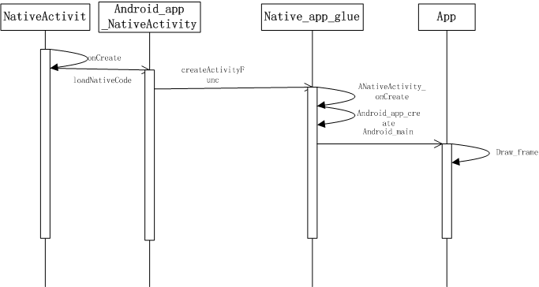
Figure 26: 函数调用序列图
3.2 Binder通信过程中的结点管理
BpBinder类代表一个远程Binder对象（继承自BpRefBase）的通信功能部分。 它提供了linkToDeath方法，供其他对象监听自己所关联的本地结点的死亡 通知，本质上是通过调用IPCThreadState类的requestDeathNotification接 口。unlinkToDeath方法则是取消接收Binder结点的死亡通知。而 sendObituary则是向监听者发送结点的死亡通知。这两个接口都会通过 IPCThreadState类的clearDeathNotification将消息处理发送到Binder驱动 去处理。
一般BpBinder对象是包含于从BpRefBase继承过来的类中，也即BpINTERFACE
类的一个私有成员，代表IPC通信的一方与另一方进行通信。在Binder驱动，
要支持死亡通知机制，是通过 binder_ref 来实现的。 binder_ref 有一个成员
是指向 struct binder_ref_death 结构的指针。它的结构定义如下：
struct binder_ref_death { struct binder_work work; binder_uintptr_t cookie; };
其中，work是指提交给当前线程或进程处理的工作类型，一般为如下三种：
BINDER_WORK_DEAD_BINDER, //dead binder BINDER_WORK_DEAD_BINDER_AND_CLEAR, //clear dead binder BINDER_WORK_CLEAR_DEATH_NOTIFICATION, //clear death notification
cookie则一般保存的是BpBinder对象的内存地址，主要用于标识当前的通信 会话。
linkToDeath(…)接口代码分析
该接口的原型如下：
virtual status_t linkToDeath(const sp<DeathRecipient>& recipient, void* cookie = NULL, uint32_t flags = 0);
使用示例如下，SurfaceFlinger将监听window manager进程的死亡消息：
void SurfaceFlinger::bootFinished() ｛ 。。。 // wait patiently for the window manager death const String16 name("window"); sp<IBinder> window(defaultServiceManager()->getService(name)); if (window != 0) { window->linkToDeath(static_cast<IBinder::DeathRecipient*>(this)); } 。。。 ｝
下面看下linkToDeath方法调用的流程：
[ -> BpBinder: linkToDeath BpBinder -> IPCThreadState: requestDeathNotification IPCThreadState -> Binder Driver: BC_REQUEST_DEATH_NOTIFICATION
下面看下处理 BC_REQUEST_DEATH_NOTIFICATION 的代码逻辑：
由于requestDeathNotification方法传入的两个参数一个是远程Binder结点 的句柄以及对象本身的内存地址（BpBinder对象），所以驱动依次拿到这两 个参数：
int binder_thread_write(struct binder_proc *proc, struct binder_thread *thread, binder_uintptr_t binder_buffer, size_t size, binder_size_t *consumed) { … case BC_REQUEST_DEATH_NOTIFICATION: case BC_CLEAR_DEATH_NOTIFICATION: { uint32_t target; binder_uintptr_t cookie; struct binder_ref *ref; struct binder_ref_death *death; if (get_user(target, (uint32_t __user *)ptr)) return -EFAULT; ptr += sizeof(uint32_t); if (get_user(cookie, (binder_uintptr_t __user *)ptr)) return -EFAULT; ptr += sizeof(binder_uintptr_t); //其中通过第一个参数在当前进程找到对应的binder_ref实例， ref = binder_get_ref(proc, target); //下面是处理BC_REQUEST_DEATH_NOTIFICATION的代码： if (cmd == BC_REQUEST_DEATH_NOTIFICATION) { 如果ref->death不为空，则说明之前已经调用过requestDeathNotification，直接忽略这次调用。 if (ref->death) { binder_user_error("%d:%d BC_REQUEST_DEATH_NOTIFICATION death notification already set\n", proc->pid, thread->pid); break; } //否则，则创建一个binder_ref_death实例，并绑定给上述的binder_ref实例。 death = kzalloc(sizeof(*death), GFP_KERNEL); if (death == NULL) { thread->return_error = BR_ERROR; binder_debug(BINDER_DEBUG_FAILED_TRANSACTION, "%d:%d BC_REQUEST_DEATH_NOTIFICATION failed\n", proc->pid, thread->pid); break; } binder_stats_created(BINDER_STAT_DEATH); INIT_LIST_HEAD(&death->work.entry); death->cookie = cookie; ref->death = death; //如果远程Binder结点所在的进程已经退出，则说明远程Binder结点已经死亡，应该发送死亡通知，是通过与之关联的binder_ref的死亡列表发送通知的。 if (ref->node->proc == NULL) { ref->death->work.type = BINDER_WORK_DEAD_BINDER; // 如果当前线程没有退出，就发送到线程的事件处理链表中，否则发送到进程的事件处理链表中。 if (thread->looper & (BINDER_LOOPER_STATE_REGISTERED | BINDER_LOOPER_STATE_ENTERED)) { list_add_tail(&ref->death->work.entry, &thread->todo); } else { list_add_tail(&ref->death->work.entry, &proc->todo); wake_up_interruptible(&proc->wait); } } } //这里说明下，当ref->death->work.entry链表为空，说明binder_ref关联的远程Binder结点还处于活跃状态，无需发送死亡通知。
unlinkToDeath(…)
[ -> BpBinder: unlinkToDeath BpBinder -> IPCThreadState: clearDeathNotification IPCThreadState -> Binder Driver: BC_CLEAR_DEATH_NOTIFICATION
下面来看处理 BC_CLEAR_DEATH_NOTIFICATION 的逻辑。
发出这个命令的情形有两种：
- 结点没有死亡，此时提交的工作类型为
BINDER_WORK_CLEAR_DEATH_NOTIFICATION，只是取消监听结点的死亡通知， 不影响其他对象对该结点的监听。 结点已经死亡，此时提交的工作类型为
BINDER_WORK_DEAD_BINDER_AND_CLEAR， 这时是要清除。int binder_thread_write(struct binder_proc *proc, struct binder_thread *thread, binder_uintptr_t binder_buffer, size_t size, binder_size_t *consumed) { … case BC_REQUEST_DEATH_NOTIFICATION: case BC_CLEAR_DEATH_NOTIFICATION: { … if (cmd == BC_REQUEST_DEATH_NOTIFICATION) { … } else { if (ref->death == NULL) { binder_user_error("%d:%d BC_CLEAR_DEATH_NOTIFICATION death notification not active\n", proc->pid, thread->pid); break; } death = ref->death; //通过cookie来标识当前通信会话 if (death->cookie != cookie) { binder_user_error("%d:%d BC_CLEAR_DEATH_NOTIFICATION death notification cookie mismatch %016llx != %016llx\n", proc->pid, thread->pid, (u64)death->cookie, (u64)cookie); break; } ref->death = NULL; // ''如果death->work.entry为空，说明被监听的Binder结点还处于活跃状态，这时只是取消对该结点的死亡监听 if (list_empty(&death->work.entry)) { death->work.type = BINDER_WORK_CLEAR_DEATH_NOTIFICATION; if (thread->looper & (BINDER_LOOPER_STATE_REGISTERED | BINDER_LOOPER_STATE_ENTERED)) { list_add_tail(&death->work.entry, &thread->todo); } else { list_add_tail(&death->work.entry, &proc->todo); wake_up_interruptible(&proc->wait); } } else { // 否则，该结点已经死亡，将当前工作类型修改为BINDER_WORK_DEAD_BINDER_AND_CLEAR BUG_ON(death->work.type != BINDER_WORK_DEAD_BINDER); death->work.type = BINDER_WORK_DEAD_BINDER_AND_CLEAR; } } … }
如下是处于当前线程或进程上的
binder_work的处理过程：static int binder_thread_read(struct binder_proc *proc, struct binder_thread *thread, binder_uintptr_t binder_buffer, size_t size, binder_size_t *consumed, int non_block) { … while (1) { … //从当前线程或进程中取出提交上来的工作类型 if (!list_empty(&thread->todo)) w = list_first_entry(&thread->todo, struct binder_work, entry); else if (!list_empty(&proc->todo) && wait_for_proc_work) w = list_first_entry(&proc->todo, struct binder_work, entry); else { … } … switch (w->type) { … case BINDER_WORK_DEAD_BINDER: case BINDER_WORK_DEAD_BINDER_AND_CLEAR: case BINDER_WORK_CLEAR_DEATH_NOTIFICATION: { struct binder_ref_death *death; uint32_t cmd; death = container_of(w, struct binder_ref_death, work); if (w->type == BINDER_WORK_CLEAR_DEATH_NOTIFICATION) //被监听的结点没有死亡，通知用户空间减少对该结点的弱引用计数 cmd = BR_CLEAR_DEATH_NOTIFICATION_DONE; else //被监听的结点已经死亡，发送BR_DEAD_BINDER通知用户空间处理 cmd = BR_DEAD_BINDER; if (put_user(cmd, (uint32_t __user *)ptr)) return -EFAULT; ptr += sizeof(uint32_t); if (put_user(death->cookie, (binder_uintptr_t __user *)ptr)) return -EFAULT; ptr += sizeof(binder_uintptr_t); binder_stat_br(proc, thread, cmd); binder_debug(BINDER_DEBUG_DEATH_NOTIFICATION, "%d:%d %s %016llx\n", proc->pid, thread->pid, cmd == BR_DEAD_BINDER ? "BR_DEAD_BINDER" : "BR_CLEAR_DEATH_NOTIFICATION_DONE", (u64)death->cookie); if (w->type == BINDER_WORK_CLEAR_DEATH_NOTIFICATION) { //这种情况是要删除death实例 list_del(&w->entry); kfree(death); binder_stats_deleted(BINDER_STAT_DEATH); } else // 将death实例的清理工作，提交到进程中延后处理（在收到BC_DEAD_BINDER_DONE时处理） list_move(&w->entry, &proc->delivered_death); //由于BR_DEAD_BINDER还要触发用户空间向Binder驱动发送后续命令BC_CLEAR_DEATH_NOTIFICATION， BC_DEAD_BINDER_DONE， 所以应当退出当前循环，以便当前线程能够处理上述命令。 if (cmd == BR_DEAD_BINDER) goto done; /* DEAD_BINDER notifications can cause transactions */ } break; } … }
如果在requestDeathNotification的时候结点已经退出，或Binder通信 结束，Binder结点被释放，调用了
binder_node_release，驱动会返回BR_DEAD_BINDER命令，通知上层处理。status_t IPCThreadState::executeCommand(int32_t cmd) ｛ 。。。 case BR_DEAD_BINDER: { BpBinder *proxy = (BpBinder*)mIn.readInt32(); proxy->sendObituary(); mOut.writeInt32(BC_DEAD_BINDER_DONE); mOut.writeInt32((int32_t)proxy); } break; 。。。 ｝
首先，代表远程结点通信的BpBinder会调用sendObituary命令，清除对 它的死亡通知列表（会向驱动发送
BC_CLEAR_DEATH_NOTIFICATION命 令），并调用监听者的回调函数通知监听者。之后，会向驱动发送BC_DEAD_BINDER_DONE，通知驱动善后处理。下面看下
BC_DEAD_BINDER_DONE的处理过程：case BC_DEAD_BINDER_DONE: { struct binder_work *w; binder_uintptr_t cookie; struct binder_ref_death *death = NULL; if (get_user(cookie, (binder_uintptr_t __user *)ptr)) return -EFAULT; ptr += sizeof(void *); //从当前进程的延迟处理列表中，取出要处理的工作类型 list_for_each_entry(w, &proc->delivered_death, entry) { struct binder_ref_death *tmp_death = container_of(w, struct binder_ref_death, work); //通过cookie来新知识对应的binder_ref_death实例 if (tmp_death->cookie == cookie) { death = tmp_death; break; } } binder_debug(BINDER_DEBUG_DEAD_BINDER, "%d:%d BC_DEAD_BINDER_DONE %016llx found %p\n", proc->pid, thread->pid, (u64)cookie, death); //如果相关信息无法找到，则直接退出，无需后续处理 if (death == NULL) { binder_user_error("%d:%d BC_DEAD_BINDER_DONE %016llx not found\n", proc->pid, thread->pid, (u64)cookie); break; } list_del_init(&death->work.entry); //结点已经死亡，需要清理消息通知相关信息 if (death->work.type == BINDER_WORK_DEAD_BINDER_AND_CLEAR) { death->work.type = BINDER_WORK_CLEAR_DEATH_NOTIFICATION; if (thread->looper & (BINDER_LOOPER_STATE_REGISTERED | BINDER_LOOPER_STATE_ENTERED)) { list_add_tail(&death->work.entry, &thread->todo); } else { list_add_tail(&death->work.entry, &proc->todo); wake_up_interruptible(&proc->wait); } } } break;
IPC通信过程示例
BC_DEAD_BINDER(binder_node_release或BC_REQUEST_DEATH_NOTIFICATION) ->BR_DEAD_BINDER(binder_thread_read) -> BC_CLEAR_DEATH_NOTIFICATION（如果结点已经死亡，则工作类型修改为BINDER_WORK_DEAD_BINDER_AND_CLEAR） -> BC_DEAD_BINDER_DONE（将工作类型修改为BINDER_WORK_CLEAR_DEATH_NOTIFICATION，提交到当前线程或进程进一步处理） -> BR_CLEAR_DEATH_NOTIFICATION_DONE
3.3 Looper类代码分析
本文将分析一下Looper类的实现及其应用，代码位于 frameworks/native/lib/utils/Looper.cpp。主要分为如下几个部分：
- epoll系统调用接口简介
- Looper类代码分析
- Looper类应用实例分析
一、epoll系统调用接口简介
Looper事件机制实际上是依赖系统调用epoll实现的。它是一种I/O复用模型， 即可以同时监控多个I/O事件。对于Looper来说，所谓的I/O事件就是所监控 的文件描述符上没有有数据到达。epoll的主要接口如下所示 ：
epoll_create()创建一个epoll实例，返回引用该实例的文件描述符。 原型如下所示 ：int epoll_create(int size );
参数size指定了我们想通过epoll实例监控文件描述符的数量。
epoll_ctl()操作与该epoll实例相关联的兴趣列表：添加一个文件描述符到兴趣 列表中，从兴趣列表中删除一个现存的文件描述符以及修改事件掩码以决 定要监控文件描述符上发生的哪个事件。 原型如下所示：int epoll_ctl(int epfd , int op , int fd , struct epoll_event * ev );
其中参数op可以取如下一些值：
EPOLL_CTL_ADD 将fd加入了监控列表 EPOLL_CTL_MOD 修改当前监控的fd相关信息 EPOLL_CTL_DEL 将fd从监控列表中删除 epoll_wait()从I/O Ready列表中返回与epoll实例相关联的项，即返回有事件发生的文 件描述符的数量。 原型如下所示：int epoll_wait(int epfd , struct epoll_event * evlist , int maxevents , int timeout );
其中timeout值为-1时，表示无限等待直到有事件发生。为0时，执行一个 非阻塞检查后立即返回。大于0时，表示一个超时时间值。
另外，
struct epoll_event结构定义如下所示 ：struct epoll_event { uint32_t events; /* epoll events (bit mask) */ epoll_data_t data; /* User data */ };
主要的事件掩码有： EPOLLIN：代表有数据可读 EPOLLOUT：代表有数据可写
epoll_data_t的数据结构定义如下：typedef union epoll_data { void *ptr; /* Pointer to user-defined data */ int fd; /*File descriptor */ uint32_t u32; /* 32-bit integer */ uint64_t u64; /* 64-bit integer */ } epoll_data_t;
使用实例:
int epfd; struct epoll_event ev; epfd = epoll_create(5); if (epfd == -1) errExit("epoll_create"); ev.data.fd = fd; ev.events = EPOLLIN; if (epoll_ctl(epfd, EPOLL_CTL_ADD, fd, ev) == -1) errExit("epoll_ctl"); ... epoll_wait(...);
二、Looper类代码分析
Looper类定义了一种事件接口，这里所谓的事件就是文件描述符上的I/O数据 是否可读或可写。它提供了一系列接口来支持事件通知和响应，通过轮询， 利用epoll系统调用，可以侦测到发生在文件描述符上的I/O事件。
在分析Looper类之前，我们先来看两个与之相关的接口：
Looper消息处理接口。
class MessageHandler : public virtual RefBase { protected: virtual ~MessageHandler() { } public: /** * Handles a message. */ virtual void handleMessage(const Message& message) = 0; };
与之相关的Looper类的几个成员函数定义如下：
/** * Enqueues a message to be processed by the specified handler. */ void sendMessage(const sp<MessageHandler>& handler, const Message& message); /** * Enqueues a message to be processed by the specified handler after all pending messages * after the specified delay. */ void sendMessageDelayed(nsecs_t uptimeDelay, const sp<MessageHandler>& handler, const Message& message); /** * Enqueues a message to be processed by the specified handler after all pending messages * at the specified time. */ void sendMessageAtTime(nsecs_t uptime, const sp<MessageHandler>& handler, const Message& message); /** * Removes all messages for the specified handler from the queue. */ void removeMessages(const sp<MessageHandler>& handler); /** * Removes all messages of a particular type for the specified handler from the queue. */ void removeMessages(const sp<MessageHandler>& handler, int what);
从上述成员函数的定义可以看到，Looper对MessageHandler都拥有强 引用，所以需要通过显式调用remoeveMessage将其删掉。
此外，也定义了一个WeakMessageHandler类，它通过一个弱引用来引 用一个MessageHandler对象，在需要的时候强化为强引用。
Looper回调函数接口。 回调函数类定义如下：
/** * A looper callback. */ class LooperCallback : public virtual RefBase { protected: virtual ~LooperCallback() { } public: /** * Handles a poll event for the given file descriptor. * It is given the file descriptor it is associated with, * a bitmask of the poll events that were triggered (typically ALOOPER_EVENT_INPUT), * and the data pointer that was originally supplied. * * Implementations should return 1 to continue receiving callbacks, or 0 * to have this file descriptor and callback unregistered from the looper. */ virtual int handleEvent(int fd, int events, void* data) = 0; };
同样地，也定义了一个辅助类SimpleLooperCallback，它支持接受一个回 调函数指针。
typedef int (*ALooper_callbackFunc)(int fd, int events, void* data);
与之相关的Looper类的成员函数如下所示 ：
int addFd(int fd, int ident, int events, ALooper_callbackFunc callback, void* data); int addFd(int fd, int ident, int events, const sp<LooperCallback>& callback, void* data);
这两个成员函数的主要作用是：将要监控的fd加入到Looper的事件监 控列表中。这里，可以指定回调函数。当有事件发生时，Looper实例会自 动调用回调函数。如果回调函数为空，则由调用者处理发生的事件。
下面将分析Looper类的实现。先分析下成员变量的意义：
const bool mAllowNonCallbacks; // immutable int mWakeReadPipeFd; // immutable int mWakeWritePipeFd; // immutable Mutex mLock; Vector<MessageEnvelope> mMessageEnvelopes; // guarded by mLock bool mSendingMessage; // guarded by mLock int mEpollFd; // immutable // Locked list of file descriptor monitoring requests. KeyedVector<int, Request> mRequests; // guarded by mLock // This state is only used privately by pollOnce and does not require a lock since // it runs on a single thread. Vector<Response> mResponses; size_t mResponseIndex; nsecs_t mNextMessageUptime; // set to LLONG_MAX when none
它们的表示的意义如下所示: mAllowNonCallbacks: 表示是否允许将文件描述符加入监控对象时， 指定回调函数为空。
mWakeReadPipeFd：Looper类默认构造的双向管道的只读端。
mWakeWritePipeFd：Looper类默认构造的双向管道的只写端。
mLock：互斥访问保护锁，主要Looper类的一些成员变量的并发访问。
mMessageEnvelopes：Looper实例包含的“消息信封”集合。消息信封 主要包含如下属性：时间戳，消息处理函数指针以及消息本身。
mSendingMessage：当前Looper实例是否正在发送消息。
mEpollFd：epoll实例对应的描述符。
mRequests：当前Looper实例中的文件描述符监控请求。对就的数据结构 struct Request定义如下：
struct Request { int fd; int ident; sp<LooperCallback> callback; void* data; };
其中，fd表示监控的文件描述符，ident表示表示监控的事件标识。 callback是事件发生时，对应的回调函数。data为传递给回调函数的自定 义数据。
mResponses：当前的响应集合。数据结构Response的定义如下：
struct Response { int events; Request request; };
mResponseIndex：响应索引号。
mNextMessageUptime：下一个消息处理的时间。
接下来，看构造函数声明：
Looper(bool allowNonCallbacks);
参数allowNonCallbacks表示是否允许将文件描述符加入监控对象时， 指定回调函数为空。
其实现如下所示： 首先，它创建了一个双向管道，一端读，一端写。并将其设置为非阻 塞模式。然后创建epoll实例，将只读端管道文件描述符中入到epoll的监 控列表中，这样保护epoll实例中至少包含有一个文件描述符在其事件监 控列表中。详细代码如下所示 ：
Looper::Looper(bool allowNonCallbacks) : mAllowNonCallbacks(allowNonCallbacks), mSendingMessage(false), mResponseIndex(0), mNextMessageUptime(LLONG_MAX) { int wakeFds[2]; int result = pipe(wakeFds); LOG_ALWAYS_FATAL_IF(result != 0, "Could not create wake pipe. errno=%d", errno); mWakeReadPipeFd = wakeFds[0]; mWakeWritePipeFd = wakeFds[1]; result = fcntl(mWakeReadPipeFd, F_SETFL, O_NONBLOCK); LOG_ALWAYS_FATAL_IF(result != 0, "Could not make wake read pipe non-blocking. errno=%d", errno); result = fcntl(mWakeWritePipeFd, F_SETFL, O_NONBLOCK); LOG_ALWAYS_FATAL_IF(result != 0, "Could not make wake write pipe non-blocking. errno=%d", errno); // Allocate the epoll instance and register the wake pipe. mEpollFd = epoll_create(EPOLL_SIZE_HINT); LOG_ALWAYS_FATAL_IF(mEpollFd < 0, "Could not create epoll instance. errno=%d", errno); struct epoll_event eventItem; memset(& eventItem, 0, sizeof(epoll_event)); // zero out unused members of data field union eventItem.events = EPOLLIN; eventItem.data.fd = mWakeReadPipeFd; result = epoll_ctl(mEpollFd, EPOLL_CTL_ADD, mWakeReadPipeFd, & eventItem); LOG_ALWAYS_FATAL_IF(result != 0, "Could not add wake read pipe to epoll instance. errno=%d", errno); }
再来看与线程相关的几个类的静态函数：
static sp<Looper> prepare(int opts);
将一个Looper实例与调用者所在的线程关联。Opts的值为：
ALOOPER_PREPARE_ALLOW_NON_CALLBACKS或0，它返回该Looper实 例。static void setForThread(const sp<Looper>& looper);
设置looper对象与当前线程关联。如果当前looper对象已经存在，则替换 掉。如果looper为NULL，则删除当前关联的looper对象。
static sp<Looper> getForThread();
返回当前线程关联的Looper实例。
接下来看下两个比较重要的成员函数：
int Looper::addFd(int fd, int ident, int events, const sp<LooperCallback>& callback, void* data)
该函数主要是将fd加入到Looper的事件监控列表中。如果 allowNonCallbacks为false，则必须指定回调函数，且此时ident值为
ALOOPER_POLL_CALLBACK(-2)，忽略传入的indent的值，而回调函数为空 时，传入的ident值不能小于0 。实际上会通过系统调用epoll_ctl将fd加 入到epoll实例的事件监控列表中。同时，也记录下此次的监控信息，封 装成一个Request实例，加入到成员变量mRequests当中。如果fd已经存在， 则替换掉旧的Request对象。void Looper::sendMessageAtTime(nsecs_t uptime, const sp<MessageHandler>& handler, const Message& message)
该函数主要作用就是发送一个Message对象，实现就是注册一个 MessageEnvelop（消息信封）实例，加入到成员变量mMessageEnvelopes， 它是按消息触发的时间排序的。
最后，我们来看下它的核心成员函数pollOnce，基本流程图如下所示 ： 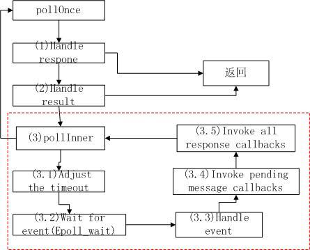
下面来分析上述过程：
Handle response
for (;;) { while (mResponseIndex < mResponses.size()) { const Response& response = mResponses.itemAt(mResponseIndex++); int ident = response.request.ident; if (ident >= 0) { int fd = response.request.fd; int events = response.events; void* data = response.request.data; #if DEBUG_POLL_AND_WAKE ALOGD("%p ~ pollOnce - returning signalled identifier %d: " "fd=%d, events=0x%x, data=%p", this, ident, fd, events, data); #endif if (outFd != NULL) *outFd = fd; if (outEvents != NULL) *outEvents = events; if (outData != NULL) *outData = data; return ident; } }
针对回调函数为空的情况，ident值必为一个大于等于0的值（注： 有回调函数时，indent的值为-2）。所以上述这段代码只会发生在回 调函数为空的情况，此时将返回发生事件的描述符，发生的事件以及 返回的数据，供调用者进一步处理。
Handle result.
for(;;) { ... if (result != 0) { #if DEBUG_POLL_AND_WAKE ALOGD("%p ~ pollOnce - returning result %d", this, result); #endif if (outFd != NULL) *outFd = 0; if (outEvents != NULL) *outEvents = 0; if (outData != NULL) *outData = NULL; return result; } ... }
这段代码实际上是根据pollInner的结果进行处理，实际上是针对设置 了回调函数的情况，因为设置了回调函数，所以已经对发生的事件做 了处理了，所以，不需要将发生事件的相关信息再返回给调用者了。
pollInner
for(;;) { ... result = pollInner(timeoutMillis); }
Ajust the time out.
int Looper::pollInner(int timeoutMillis) { ... // Adjust the timeout based on when the next message is due. if (timeoutMillis != 0 && mNextMessageUptime != LLONG_MAX) { nsecs_t now = systemTime(SYSTEM_TIME_MONOTONIC); int messageTimeoutMillis = toMillisecondTimeoutDelay(now, mNextMessageUptime); if (messageTimeoutMillis >= 0 && (timeoutMillis < 0 || messageTimeoutMillis < timeoutMillis)) { timeoutMillis = messageTimeoutMillis; } ... } ... }
为什么要调整超时时间值，原因很简单：因为对于消息来说， 可能有多个消息，且每个消息触发的时间点不同，一次事件的触发 导致epoll_wait返回并不能处理完所有的消息，所有会多次调用 epoll_wait函数，由于超时值是第一次调用时指定的，所以再次调 用时，需要重新计算，要去掉已经消耗的时间。代码中now记录当 前的时间值，toMillisecondTimeoutDelya(…)计算这本次循环的 超时值。上述的判断条件指明了什么情况下需要做些调整：
- 当前的消息触发时间不早于当前时间。（即消息没有过时）
- 上轮
epoll_wait指定的超时值为-1或一个较大的数值（> messageTimeoutMillis）。
wait for event(epoll wait)
... struct epoll_event eventItems[EPOLL_MAX_EVENTS]; int eventCount = epoll_wait(mEpollFd, eventItems, EPOLL_MAX_EVENTS, timeoutMillis); ...主要通过
epoll_wait系统调用检测事件的发生。handle the event
... for (int i = 0; i < eventCount; i++) { int fd = eventItems[i].data.fd; uint32_t epollEvents = eventItems[i].events; if (fd == mWakeReadPipeFd) { if (epollEvents & EPOLLIN) { awoken(); } else { ALOGW("Ignoring unexpected epoll events 0x%x on wake read pipe.", epollEvents); } } else { ssize_t requestIndex = mRequests.indexOfKey(fd); if (requestIndex >= 0) { int events = 0; if (epollEvents & EPOLLIN) events |= ALOOPER_EVENT_INPUT; if (epollEvents & EPOLLOUT) events |= ALOOPER_EVENT_OUTPUT; if (epollEvents & EPOLLERR) events |= ALOOPER_EVENT_ERROR; if (epollEvents & EPOLLHUP) events |= ALOOPER_EVENT_HANGUP; pushResponse(events, mRequests.valueAt(requestIndex)); } else { ALOGW("Ignoring unexpected epoll events 0x%x on fd %d that is " "no longer registered.", epollEvents, fd); } } } ...
对于Looper对象内置的管道，处理EPOLLIN事件，而对于其他 监听的文件描述符，则分别记录下EPOLLIN， EPOLLOUT， EPOLLERR， EPOLLHUP并打包成Response对象加入到mResponses中 进行处理。
invoke pending message callbacks
// Invoke pending message callbacks. mNextMessageUptime = LLONG_MAX; while (mMessageEnvelopes.size() != 0) { nsecs_t now = systemTime(SYSTEM_TIME_MONOTONIC); const MessageEnvelope& messageEnvelope = mMessageEnvelopes.itemAt(0); if (messageEnvelope.uptime <= now) { // Remove the envelope from the list. // We keep a strong reference to the handler until the call to handleMessage // finishes. Then we drop it so that the handler can be deleted *before* // we reacquire our lock. { // obtain handler sp<MessageHandler> handler = messageEnvelope.handler; Message message = messageEnvelope.message; mMessageEnvelopes.removeAt(0); mSendingMessage = true; mLock.unlock(); #if DEBUG_POLL_AND_WAKE || DEBUG_CALLBACKS ALOGD("%p ~ pollOnce - sending message: handler=%p, what=%d", this, handler.get(), message.what); #endif handler->handleMessage(message); } // release handler mLock.lock(); mSendingMessage = false; result = ALOOPER_POLL_CALLBACK; } else { // The last message left at the head of the queue determines the next wakeup time. mNextMessageUptime = messageEnvelope.uptime; break; } }
messageEnvelope.uptime代表该消息被处理的时机，先处理掉已经 过时的消息，即messageEnvelope.uptime <= now， 如果还有未过 时的消息，则记录下它应该被处理的时间：mNextMessageUptime = messageEnvelope.uptime；也即下次被触发的时间。这个值也作为 3.1中调整epoll_wait超时时间的值。
invoke all response callback 对于回调函数不为空的情形，在事件触发后，就会自动执行调 用者提供的回调函数，如下面代码所示：
// Invoke all response callbacks. for (size_t i = 0; i < mResponses.size(); i++) { Response& response = mResponses.editItemAt(i); if (response.request.ident == ALOOPER_POLL_CALLBACK) { int fd = response.request.fd; int events = response.events; void* data = response.request.data; #if DEBUG_POLL_AND_WAKE || DEBUG_CALLBACKS ALOGD("%p ~ pollOnce - invoking fd event callback %p: fd=%d, events=0x%x, data=%p", this, response.request.callback.get(), fd, events, data); #endif int callbackResult = response.request.callback->handleEvent(fd, events, data); if (callbackResult == 0) { removeFd(fd); } // Clear the callback reference in the response structure promptly because we // will not clear the response vector itself until the next poll. response.request.callback.clear(); result = ALOOPER_POLL_CALLBACK; }
三、Looper类应用实例分析
下面来看下Looper类的API的使用。
Looper对象初始化
sp<Looper> mLooper = new Looper(true); ... mLooper.clear();
pollOnece函数的使用
StopWatch stopWatch("pollOnce"); int result = mLooper->pollOnce(1000); int32_t elapsedMillis = ns2ms(stopWatch.elapsedTime());
返回值为 result =
ALOOPER_POLL_WAKE设置CallBack 定义回调函数：
class CallbackHandler { public: void setCallback(const sp<Looper>& looper, int fd, int events) { looper->addFd(fd, 0, events, staticHandler, this); } protected: virtual ~CallbackHandler() { } virtual int handler(int fd, int events) = 0; private: static int staticHandler(int fd, int events, void* data) { return static_cast<CallbackHandler*>(data)->handler(fd, events); } }; class StubCallbackHandler : public CallbackHandler { public: int nextResult; int callbackCount; int fd; int events; StubCallbackHandler(int nextResult) : nextResult(nextResult), callbackCount(0), fd(-1), events(-1) { } protected: virtual int handler(int fd, int events) { callbackCount += 1; this->fd = fd; this->events = events; return nextResult; } };
使用实例：
Pipe pipe; StubCallbackHandler handler(true); pipe.writeSignal(); handler.setCallback(mLooper, pipe.receiveFd, ALOOPER_EVENT_INPUT); StopWatch stopWatch("pollOnce"); int result = mLooper->pollOnce(100); int32_t elapsedMillis = ns2ms(stopWatch.elapsedTime()); ...
result的值为
ALOOPER_POLL_CALLBACK。Callback为空的情形 若设置Callback为空，此时事件的标识符ident必须是一个大于或等 于0的值。如下代码所示：
const int expectedIdent = 5; void* expectedData = this; Pipe pipe; pipe.writeSignal(); mLooper->addFd(pipe.receiveFd, expectedIdent, ALOOPER_EVENT_INPUT, NULL, expectedData); StopWatch stopWatch("pollOnce"); int fd; int events; void* data; int result = mLooper->pollOnce(100, &fd, &events, &data); int32_t elapsedMillis = ns2ms(stopWatch.elapsedTime());
此时返回值result等于ident的值。
通过Looper发送消息 此种情况下一般不需要调用addFd，通过Looper默认创建的管道来监 听事件就行了。它的使用示例如下： 首先要定义一个MessageHandler的派生类，用于处理消息：
class StubMessageHandler : public MessageHandler { public: Vector<Message> messages; virtual void handleMessage(const Message& message) { messages.push(message); } };
接着就可以通过SendMessage相关的函数发送消息到Looper实例上：
nsecs_t now = systemTime(SYSTEM_TIME_MONOTONIC); sp<StubMessageHandler> handler = new StubMessageHandler(); mLooper->sendMessageAtTime(now + ms2ns(100), handler, Message(MSG_TEST1)); StopWatch stopWatch("pollOnce"); int result = mLooper->pollOnce(1000); int32_t elapsedMillis = ns2ms(stopWatch.elapsedTime()); ... result = mLooper->pollOnce(1000); elapsedMillis = ns2ms(stopWatch.elapsedTime()); ... result = mLooper->pollOnce(100); elapsedMillis = ns2ms(stopWatch.elapsedTime());
第一次 elapsedMillis = 0; result = ALOOPER_POLL_WAKE Message size = 0; 第二次 elapsedMillis = 100 result = ALOOPER_POLL_CALLBACK Message size = 1 第三次 result = ALOOPER_POLL_TIMEOUT 没有消息需要处理。
3.4 Android Region代码分析
一、Region的定义和合法性检查
在Android系统中，定义了Region的概念，它代表屏幕上的一个区域，它 是由一个或多个Rect组成的，代码位于 frameworks/native/libs/ui/Region.cpp。而Rect则代表屏幕上的一个方形 区域，这个区域可能是不可见的，部分可见或者完全不可见的。从代码实现 的角度来看Region的实现，它拥有一个私有的数据成员变量：mStorage，它 的类型为Vector<Rect>：
- mStorage是一个有序数组，数组元素类型为Rect，除了包含构成Region区 域的Rect外，还额外地包含一个元素，它就是这块区域的边界。
- 如果Region只是一个简单的方形区域，则mStorage只包含这个Rect类型的 元素。 从上述两点可知，mStorge的大小永远不可能为2，要想知道某个区域 的边界大小，只需返回mStorage的最后一个元素。
Rect与Region的关系是is-a关系，反之则不成立。
inline bool isEmpty() const { return getBounds().isEmpty(); } inline bool isRect() const { return mStorage.size() == 1; } inline Rect getBounds() const { return mStorage[mStorage.size() - 1]; } inline Rect bounds() const { return getBounds(); }
接下来研究的话题是Region的合法性。由于Region本身是由一系列Rect 组成的，所以，首先，构成的Rect本身必须是合法的。其次，构成的Rect必 须以Y方向和X方向排序，Y方向优先排序。这里引入另一个概念Span，它也是 一个区域的概念，也是由一个或多个Rect组成，可以认为它是一种特殊的 Region， 其本身也是构成Region的一部分，事实上，一个Region可以看成是 由许多Span构成的。不过这些构成Span的Rect必须在Y方向上，top和bottom 值与其他的Rect相同，即Y方向上不能重叠，在X上方向，left与right之间的 覆盖的区域不能与其他的Rect之间有重叠。基于上述的描述，要检查一个 Region是否合法，就要对上述的一些要求做检查，我们可以看Region的 validate()函数，它实际上就是这样做的：
首先检查构成Region的Rect本身的合法性。
... if (cur->isValid() == false) { ALOGE_IF(!silent, "%s: region contains an invalid Rect", name); result = false; } if (cur->right > region_operator<Rect>::max_value) { ALOGE_IF(!silent, "%s: rect->right > max_value", name); result = false; } if (cur->bottom > region_operator<Rect>::max_value) { ALOGE_IF(!silent, "%s: rect->right > max_value", name); result = false; } ...
接下来，检查这些Rect是否是有序的。
if ((*prev < *cur) == false) { ALOGE_IF(!silent, "%s: region's Rects not sorted", name); result = false; }
然后就是检查Span的合法性
if (cur->top == prev->top) { if (cur->bottom != prev->bottom) { ALOGE_IF(!silent, "%s: invalid span %p", name, cur); result = false; } else if (cur->left < prev->right) { ALOGE_IF(!silent, "%s: spans overlap horizontally prev=%p, cur=%p", name, prev, cur); result = false; } } else if (cur->top < prev->bottom) { ALOGE_IF(!silent, "%s: spans overlap vertically prev=%p, cur=%p", name, prev, cur); result = false; }
当然，也要检查最后一个元素是不是该区域的边界。
if (b != reg.getBounds()) { result = false; ALOGE_IF(!silent, "%s: invalid bounds [%d,%d,%d,%d] vs. [%d,%d,%d,%d]", name, b.left, b.top, b.right, b.bottom, reg.getBounds().left, reg.getBounds().top, reg.getBounds().right, reg.getBounds().bottom); }
最后，要检查一种不可能出现的情况，即mStorage的大小为2。
if (reg.mStorage.size() == 2) { result = false; ALOGE_IF(!silent, "%s: mStorage size is 2, which is never valid", name); }
到此为上，Region合法性的讨论就结束了。
最后总结一下：前面主要引入三个概念: Rect, Span, Region，它们之间 的区别如下 ： 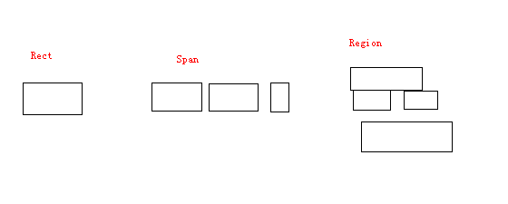
二、Region的Boolean操作
Region的Boolean操作总体主要分主要有如下几种：
enum { op_nand = region_operator<Rect>::op_nand, op_and = region_operator<Rect>::op_and, op_or = region_operator<Rect>::op_or, op_xor = region_operator<Rect>::op_xor };
下面我们主要以 op_or 操作为情景，分析Region如何执行这些boolean操
作的。显然，Region可以与Region或Rect之间进行上述的boolean操作。当然，
执行这些操作后，Region可能会变得不合法了，需要进行调整使新的Region
变为合法的，整个过程就会伴随着怎样将Region从不合法的状态调整成合法
的状态，这个过程会涉及到Rect的合并或分解。
下面我们将分析 boolean_operation(...) 函数的执行过程，因为所有的
这些boolean操作都是基于此函数实现的。我们直接进入关键代码段：
size_t lhs_count; Rect const * const lhs_rects = lhs.getArray(&lhs_count); region_operator<Rect>::region lhs_region(lhs_rects, lhs_count); region_operator<Rect>::region rhs_region(&rhs, 1, dx, dy); region_operator<Rect> operation(op, lhs_region, rhs_region); { // scope for rasterizer (dtor has side effects) rasterizer r(dst); operation(r); }
我们将上述分为三步：
region_operator<Rect> operation(op, lhs_region, rhs_region);这一步是初始化，为第二步做准备。传递了两个信息：Region进行的什么 操作，以及操作的两个Region对象，这两个Region对象的引用被传递给了 Spanner对象。region_operator这个类定义两个Region之间的boolean操 作的步骤，其中定义的内部类region_rasterizer主要作用就是将一个 Rect加入到当前的Region中，其中会涉及到Span与Rect之间的合并。class region_rasterizer { friend class region_operator; virtual void operator()(const RECT& rect) = 0; public: virtual ~region_rasterizer() { }; };
rasterizer r(dst);类rasterrizer是Region类中内部类，它继承自上面提到的region_rasterizer类。主要实现了其中的operator()(const RECT& rect)虚函数。它对Region进行了一些初始化，该Region将是执行boolean 操作后的结果Region。rasterizer(Region& reg) : bounds(INT_MAX, 0, INT_MIN, 0), storage(reg.mStorage), head(), tail(), cur() { storage.clear(); }
operation(r); 这步进入了实际的操作过程，将执行如下的函数：
void operator()(region_rasterizer& rasterizer) { RECT current; do { SpannerInner spannerInner(spanner.lhs, spanner.rhs); int inside = spanner.next(current.top, current.bottom); spannerInner.prepare(inside); do { TYPE left, right; int inside = spannerInner.next(current.left, current.right); if ((op_mask >> inside) & 1) { if (current.left < current.right && current.top < current.bottom) { rasterizer(current); } } } while(!spannerInner.isDone()); } while(!spanner.isDone()); }
在详细分解这个函数的执行过程之前，我们简单描述下Spanner和 SpannerInner这两个类的作用。Spanner相当于Region内部Span集合的迭 代器，它会从Y轴增长的方向逐个迭代Span;而SpannerInner则相当于某个 Span的内部迭代器，它会从X轴增长的方向迭代包含于这个Span内的Rect 对象。
下面， 描述这个函数的执行步骤：
- int inside = spanner.next(current.top, current.bottom); 这步首先会决定当前迭代的Span，以current.top, current.bottom来 指定当前所处的Span。另外，也会根据inside得到两个Region之间的 相对位置信息，其实质是比较两个Region的第一个Span的相对位置关 系：首先，看它们的top值，然后是bottom值。如果这两个Region在Y 轴方向有重叠，就会发生Span的在Y轴的分解，并通过更新 current.top, current.bottom记录下当前所处的新Span。
- spannerInner.prepare(inside); 根据上一步得到的两个Region的相对位置信息，来决定X轴方向迭 代的起始值。
进入循环，直到当前Span内的Rect迭代结束。
int inside = spannerInner.next(current.left, current.right);
这步每执行一次会更新当前的current.left, current.right的值， 如果两个Region在X轴方向上有重叠，就会在Span内部发生Rect的分解， 并通过更新current.left, current.right记录下当前所处的新的Rect。 根据Region执行的boolean操作的语义，以决定当前所指的Rect是否应 该加入到操作后的结果Region中去，即
if ((op_mask >> inside) & 1) { if (current.left < current.right && current.top < current.bottom) { rasterizer(current); } }
下图是两个Region执行合并操作时的过程示意图：
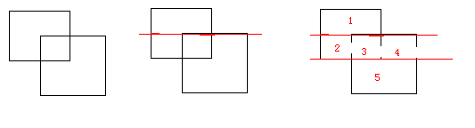
最后结果中，有三个Span，第一个Span包含Rect 1, 第二个Span包含 Rect 2,3,4， 第三个Span中包含Rect 5。不过上述也只是中间结果， 在执行rasterizer(current);之后，才是最终的结果，所以我们接着 看下rasterizer(current)的执行过程。根据C++虚函数的多态性， 这个调用实际会执行到Region::rasterizer类的 operator()(const Rect& rect) 方法，来看下它的具体实现过程：
virtual void operator()(const Rect& rect) { //ALOGD(">>> %3d, %3d, %3d, %3d", // rect.left, rect.top, rect.right, rect.bottom); if (span.size()) { if (cur->top != rect.top) { flushSpan(); } else if (cur->right == rect.left) {//two rect connected and will merge into one rect. cur->right = rect.right; return; } } span.add(rect); cur = span.editArray() + (span.size() - 1); }
简单描述下上述函数所反映的逻辑：如果传入的Rect对象是当前 Span的第一个Rect对象，则直接将其加入到向量span中，对于第二个 及之后加入的Rect，则进行这样的判断，如果当前Rect对象的top值不 等于当前Span的top值，说明是一个新的Span开始，则首先需要通过 fushSpan()将之前Span加入到结果Region中去，可能会涉及到合并的 操作，主要是指相邻两个Span之间的合并;如果当前Rect对象还属于同 一个Span，则看这个Rect是否可以与相邻的Rect进行合并。
最后一步，执行Region::rasterizer类的析构函数
~rasterizer() { if (span.size()) { flushSpan(); } if (storage.size()) { bounds.top = storage.itemAt(0).top; bounds.bottom = storage.top().bottom; if (storage.size() == 1) { storage.clear(); } } else { bounds.left = 0; bounds.right = 0; } storage.add(bounds); }
首先，执行最后一次flushSpan，确保所有的Span都加入到了结果 Region中，当然，也会执行必要的合并。最后，根据Region合法性的 要求，将Region的边界作为一个Rect对象加入到结果Region中。所以， 最后，我们看到的结果Region是这样的：
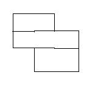
三、T-Junction消除
T-Junction问题是图像渲染中的经常碰到的一个问题，特别是3D Graphics Rendering技术中，T-Junction消除是其中的一个研究课题。那 什么是T-Junction问题呢？
下面是对T-Junction问题的描述：
“A T-Junction is a spot where two polygons meet along the edge of another polygon”
如： 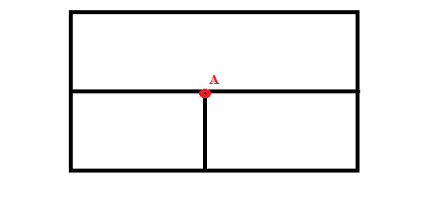
另一种表述为： “The location where a vertex of one polygon lies on the edge of another polygon is called a T-Junction”
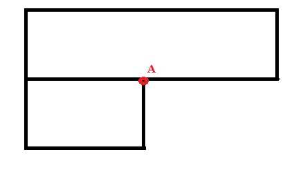
T-Junction会产生什么后果呢，我们先看下Android代码中的描述： “avoid T-junctions as they cause artifacts in between the resultant geometry when complex transforms occur.”
我的理解是因为图像渲染过程中会基于顶点进行插值，顶点A处的插值点 在图形转换后，并不能保证与顶点A完全重合，所以在生成的图像中 T-Junction处产生亮点，与周围像素不协调。下面我们重点看Android源 码是怎样进行T-Junction消除的。
在Region类中，专门定义了一个函数：createTJunctionFreeRegion， 它对一个含有T-Junction的Region进行修改，使之变成没有T-Juncion的 Region。最终结果会出现对一些Span的分解。
根据RegionTest.cpp中的checkVertTJunction函数：
void checkVertTJunction(const Rect* lhs, const Rect* rhs) { EXPECT_FALSE((rhs->right > lhs->left && rhs->right < lhs->right) || (rhs->left > lhs->left && rhs->left < lhs->right)); }
我们可以看到Android视如下几种情况为T-Juction: 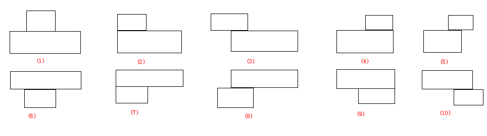
在了解了存在T-Junction的几种存在情况后，我们来看具体是怎样消除 T-Junction的：
Region Region::createTJunctionFreeRegion(const Region& r) { if (r.isEmpty()) return r; if (r.isRect()) return r; Vector<Rect> reversed; reverseRectsResolvingJunctions(r.begin(), r.end(), reversed, direction_RTL); Region outputRegion; reverseRectsResolvingJunctions(reversed.begin(), reversed.end(), outputRegion.mStorage, direction_LTR); outputRegion.mStorage.add(r.getBounds()); // to make region valid, mStorage must end with bounds #if VALIDATE_REGIONS validate(outputRegion, "T-Junction free region"); #endif return outputRegion; }
可以看到，具体执行T-Junction消除的函数是 reverseRectsResolvingJunctions，而且被调用了两次，这其实也反映了 消除T-Junction过程中的步骤，在这个过程中，需要对Region按以Span为 单位进行两次扫描，第一次从Y轴减小的方向扫描，第二次，从Y轴增长的 方向扫描。每次扫描，都会将T-Junction点消除，进行两次扫描的原因是 因为每次扫描只能消除上述的5种情况。下图是T-Junction点消除后的情 况：
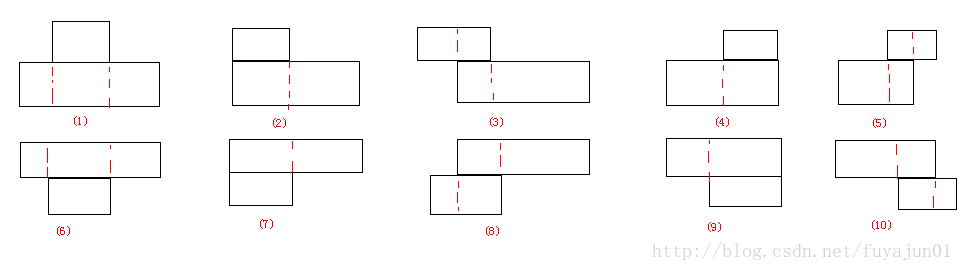
红色虚线是分解边。可以看到，这个过程会产生许多新的Rect。
四、测试与验证
前面三部分是理论部分，主要是通过阅读源码得到的一些步骤和过程，下 面将通过测试程序来验证我们的理论，看我们的理解是否正正确：
验证Region的boolean操作。
void test2() { Region r; r.clear(); r.orSelf(Rect(0, 0, 2, 2)); r.orSelf(Rect(1, 1, 3, 3)); dump(r, "A|B"); echo("--------------"); r.clear(); r.orSelf(Rect(0, 0, 2, 2)); r.xorSelf(Rect(1, 1, 3, 3)); dump(r, "A xor B"); echo("----------------------------"); r.clear(); r.orSelf(Rect(0, 0, 2, 2)); r.subtractSelf(Rect(1, 1, 3, 3)); dump(r, "A-B"); echo("---------------------"); }
输出结果：
Region: A|B, count = 3 [ 0, 0, 2, 1] [ 0, 1, 3, 2] [ 1, 2, 3, 3] ---------------------- Region: A xor B, count = 4 [ 0, 0, 2, 1] [ 0, 1, 1, 2] [ 2, 1, 3, 2] [ 1, 2, 3, 3] ---------------------- Region: A-B, count = 2 [ 0, 0, 2, 1] [ 0, 1, 1, 2] ----------------------
结果完全符合预期。
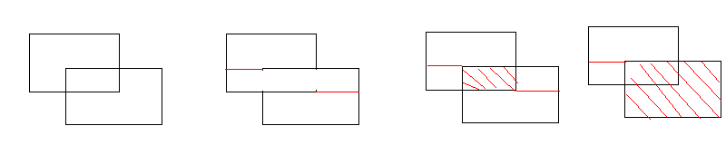
验证T-Junction的消除结果是否与我们的预期一致。
void test1() { Region r; r.clear(); r.orSelf(Rect(1, 0, 2, 1)); r.orSelf(Rect(0, 1, 3, 2)); dump(r, "1"); echo("----------------------------"); Region modified = Region::createTJunctionFreeRegion(r); dump(modified, "1'"); echo("------------------------"); r.clear(); r.orSelf(Rect(0, 0, 1, 1)); r.orSelf(Rect(0, 1, 2, 2)); dump(r, "2"); echo("-------------------------"); modified = Region::createTJunctionFreeRegion(r); dump(modified, "2'"); echo("-----------------------------"); r.clear(); r.orSelf(Rect(0, 0, 2, 1)); r.orSelf(Rect(1, 1, 3, 2)); dump(r, "3"); echo("-------------------"); modified = Region::createTJunctionFreeRegion(r); dump(modified, "3'"); echo("--------------------------"); r.clear(); r.orSelf(Rect(1, 0, 2, 1); r.orSelf(Rect(0, 1, 2, 2)); dump(r, "4"); echo("------------------------"); modified = Region::createTJunctionFreeRegion(r); dump(modified, "4'"); echo("------------------------"); r.clear(); r.orSelf(Rect(1, 0, 3, 1)); r.orSelf(Rect(0, 1, 2, 2)); dump(r, "5"); modified = Region::createTJunctionFreeRegion(r); dump(modified, "5'"); echo("--------------------------"); }
输出结果：
Region: 1, count = 2 [ 1, 0, 2, 1] [ 0, 1, 3, 2] ---------------------- Region: 1', count = 4 [ 1, 0, 2, 1] [ 0, 1, 1, 2] [ 1, 1, 2, 2] [ 2, 1, 3, 2] ---------------------- Region: 2, count = 2 [ 0, 0, 1, 1] [ 0, 1, 2, 2] ---------------------- Region: 2', count = 3 [ 0, 0, 1, 1] [ 0, 1, 1, 2] [ 1, 1, 2, 2] ---------------------- Region: 3, count = 2 [ 0, 0, 2, 1] [ 1, 1, 3, 2] ---------------------- Region: 3', count = 4 [ 0, 0, 1, 1] [ 1, 0, 2, 1] [ 1, 1, 2, 2] [ 2, 1, 3, 2] ---------------------- Region: 4, count = 2 [ 1, 0, 2, 1] [ 0, 1, 2, 2] ---------------------- Region: 4', count = 3 [ 1, 0, 2, 1] [ 0, 1, 1, 2] [ 1, 1, 2, 2] ---------------------- Region: 5, count = 2 [ 1, 0, 3, 1] [ 0, 1, 2, 2] ---------------------- Region: 5', count = 4 [ 1, 0, 2, 1] [ 2, 0, 3, 1] [ 0, 1, 1, 2] [ 1, 1, 2, 2] ----------------------
这个结果也符合预期。
练习题
构造如下Region：
Region r; // |xxxx | // | xxxx | // | xxxx | // | xxxx| for (int i = 0; i < 4; i++) { r.orSelf(Rect(i,i,i+4,i+1)); }
消除T-Junction前有4个Rect, 消除T-Junction后有16个Rect。
3.5 Binder通信过程中的用户空间线程池的管理
在Binder通信机制里，客户端与服务端之间的通信是在专门的IPC通信线程
中进行的。这些线程构成一个线程池。线程的创建和销毁是在用户空间进行
的，而对线程的控制是在驱动层进行的，即驱动控制线程池中线程的生命，
而线程本身则是运行在用户空间的。驱动层是通过 BR_SPAWN_LOOPER 向用户
空间发送创建新线程的命令。
线程池的大小可以设置。默认情况下，线程池只有一个主线程，它在进程生
命周期期间是不会退出。与线程池相关的几个变量设置在struct
binder_proc 结构体中：
struct binder_proc { ... int max_threads;//max thread int requested_threads;// int requested_threads_started;//requested thread seq No int ready_threads;//available for use ... };
其中，=max_threads= 表示当前进程线程池的大小。ioctl命令
BINDER_SET_MAX_THREADS 用来设置这个值，默认情况下是0，即不开启线程
池。 ready_threads 表示当前线程池中有没有可用的空闲线程。
requested_threads 请求开启线程的数量。 requested_threads_started 表示
当前已经接受请求开启的线程数量。
对于IPC通信的服务端进程，一般会执行如下的调用启动线程池：
ProcessState::self()->setThreadPoolMaxThreadCount(4); ProcessState::self()->startThreadPool(); IPCThread::self()->joinThreadPool();
上述代码会在一个进程中执行，并产生两个线程，其中一个是进程的主线程，
但这两个线程都是Binder主线程，即他不会纳入线程池的管理。网上有不少
说法是最后一个调用看起来是多余的，原因是去掉后，也可以正常执行，但
是其实不然。在我看来，在主线程中调用
IPCThread::self()->joinThreadPool() 的一层目的是确保前一句调用产生
的线程不会因为执行到了main函数结尾而被迫退出，因为
ProcessState::self()->startThreadPool() 不会导致主线程阻塞，而
IPCThread::self()->joinThreadPool() 调用才会导致主线程阻塞。并且，
它们提供相同的功能：它能处理Binder驱动发送上来的一些请求或返回值，
进一步提高了Binder命令处理的吞吐量。当然，如果在他们之间加入了让主
线程阻塞的代码，则最后的函数调用是可以省略的，否则是不能省略的。
执行完上述语句后, 已经有两个服务线程了，此时线程池线程的数量为0，
后续可以创建4个线程。默认情况下，线程池中没有线程，由于本身已经有
了2个线程可用，一般情况下，能满足要求。但是，当有多个并发的IPC请求
时，可能会触发内核增加更多的IPC通信线程来服务这些请求。当接受
Binder驱动从内核中发出的 BR_SPAWN_LOOPER 命令时，会启动一个非Binder主
线程。我们来看下在什么情况下会触发这种情况：
if (proc->requested_threads + proc->ready_threads == 0 && proc->requested_threads_started < proc->max_threads && (thread->looper & (BINDER_LOOPER_STATE_REGISTERED | BINDER_LOOPER_STATE_ENTERED)) /* the user-space code fails to */ /*spawn a new thread if we leave this out */) { proc->requested_threads++; binder_debug(BINDER_DEBUG_THREADS, "%d:%d BR_SPAWN_LOOPER\n", proc->pid, thread->pid); if (put_user(BR_SPAWN_LOOPER, (uint32_t __user *)buffer)) return -EFAULT; binder_stat_br(proc, thread, BR_SPAWN_LOOPER); }
在请求的线程数和空闲的线程数为零且已经请求并开启的线程数小于线程池 的最大允许线程数量时，就向用户空间发送命令，以开启新的接收线程来处 理请求。因为此时，接收进程中所有的线程都在忙碌中。
在用户空间通过如下调用启动线程：
mProcess->spawnPooledThread(false);
最终会调用如下函数：
void IPCThreadState::joinThreadPool(bool isMain) { LOG_THREADPOOL("**** THREAD %p (PID %d) IS JOINING THE THREAD POOL\n", (void*)pthread_self(), getpid()); mOut.writeInt32(isMain ? BC_ENTER_LOOPER : BC_REGISTER_LOOPER); … }
这种情况下，会通过向Binder驱动发 BC_REGISTER_LOOPER 通知驱动用户空间线
程已经创建，这样驱动也会做些数据统计：
case BC_REGISTER_LOOPER: … } else { proc->requested_threads--; proc->requested_threads_started++; } thread->looper |= BINDER_LOOPER_STATE_REGISTERED; break;
驱动会更新 proc->requested_threads_started 来统计当前已经请求开启并成
功开启的线程数量，这个值将作为判断线程池是否已经满的依据。
而在Binder驱动层，会跟用户空间的线程关联一个 struct binder_thread
实例，这个结构记录了内核空间的在该线程上执行的一些IPC状态信息。其数
据结构定义如下：
struct binder_thread { struct binder_proc *proc; //线程所属的进程 struct rb_node rb_node; //红黑树的结点，进程通过该结点将线程加入到红黑树中 int pid; //线程的pid int looper; //线程所处的状态 struct binder_transaction *transaction_stack;//transaction session list on this thread struct list_head todo; //在该线程上的Task列表 uint32_t return_error; /* Write failed, return error code in read buf */ uint32_t return_error2; /* Write failed, return error code in read */ /* buffer. Used when sending a reply to a dead process that */ /* we are also waiting on */ wait_queue_head_t wait; //该线程的等待队列 struct binder_stats stats; //统计该线程上的命令数量 };
3.6 Binder通信相关的类简要分析
一、BpBinder
这个类通常作为IPC通信的Client端，或者说Remote端，提供实际的IPC基础 通信服务。在代码中通常不直接使用到该类，一般以成员变量的形式，包含 于BpRefBase类中，通过remote()方法引用该成员变量。继承关系如下：
BpXXX –> BpInterface<IXXX> –> BpRefBase
在BpXXX方法中，就可以直接通过remote()方法引用到BpBinder实例，继而 利用其提供的IPC通信功能，通过Binder协议与另一端进行通信。
BpBinder类的定义说明
成员变量分析：
const int32_t mHandle;//handle for remote obj void reportOneDeath(const Obituary& obit); bool isDescriptorCached() const; mutable Mutex mLock; volatile int32_t mAlive; volatile int32_t mObitsSent; //we have already send Obit? can notify is object is already dead Vector<Obituary>* mObituaries;//dead notification listerners ObjectManager mObjects; Parcel* mConstantData; mutable String16 mDescriptorCache;
mHandle: 这是一个重要的成员变量，代表Binder驱动为一个远程对象分配 的一个句柄，在Binder驱动中，通过该句柄号，找到对应的Binder引用结点， 通过Binder引用结点，找到其引用的位于不同进程中的一个Binder结点，从 而将利用该Binder结点将通信数据路由到通信的另一端所在的进程。
mLock：保护BpBinder对象的一些方法的访问，从而保证任何时刻不会同时 执行两个或以上方法。
mAlive：Binder IPC通信是否处于活跃状态。
mObjects： 对象管理，主要是对Java Binder对象的管理。
mConstantData： 未使用
mDescriptorCache：保存接口描述信息。
主要方法分析：
virtual status_t transact( uint32_t code, const Parcel& data, Parcel* reply, uint32_t flags = 0);
该方法是Binder IPC通信的入口，其实质上是调用IPCThreadState类的 transact方法。
如下两个接口则是提供监听远程对象死亡通知的接口。
virtual status_t linkToDeath(const sp<DeathRecipient>& recipient, void* cookie = NULL, uint32_t flags = 0); virtual status_t unlinkToDeath( const wp<DeathRecipient>& recipient, void* cookie = NULL, uint32_t flags = 0, wp<DeathRecipient>* outRecipient = NULL);
BpBinder对象作为远程对象的代理，它会跟踪远程对象的状态（实质上是在 驱动中，跟踪Binder通信结点，结点死亡的信息也是通过驱动层向用户空间 发送的），一旦接收到死亡通知，则会调用如下接口通知所有监听者：
void sendObituary();
其会调用如下方法调用所有监听者提供的回调函数：
void reportOneDeath(const Obituary& obit);
二、BBinder
BBinder类作为Binder IPC通信的Server端或Local端，处理来自Client端或 Remote端的服务请求。它的主要方法就是处理请求：
status_t BBinder::transact( uint32_t code, const Parcel& data, Parcel* reply, uint32_t flags)
在IPCThreadState中，是通过如下方式调用到上述的接口的：
IPCThreadState(979)： case BR_TRANSACTION: … if (tr.target.ptr) {//local sp<BBinder> b((BBinder*)tr.cookie); const status_t error = b->transact(tr.code, buffer, &reply, tr.flags); if (error < NO_ERROR) reply.setError(error); } else {//remote const status_t error = the_context_object->transact(tr.code, buffer, &reply, tr.flags); if (error < NO_ERROR) reply.setError(error); }
三、Java层类
Java层的类主要有Binder和BinderProxy，其中Binder跟BBinder一样，属于 Server或Local端，而BinderProxy则与BpBinder一样，属于Client端或 Remote端。
对于BinderProxy类对象，跟BpBinder一样，同样是作为XXXProxy的成员变 量的形式包含于其中。
XXXProxy –> IXXX –> IInterface.
在JNI层，定义了两个转换函数：
jobject javaObjectForIBinder(JNIEnv* env, const sp<IBinder>& val); sp<IBinder> ibinderForJavaObject(JNIEnv* env, jobject obj);
上述两种函数提供了Java对象（主要是Binder和BinderProxy对象）与 Native层IBinder对象之间的相互转换接口。
当我们调用transact方法时，会经历如下一些过程：
//in BinderProxy.java public native boolean transact(int code, Parcel data, Parcel reply, int flags) throws RemoteException;
–>
//in android_util_Binder.cpp static jboolean android_os_BinderProxy_transact(JNIEnv* env, jobject obj, jint code, jobject dataObj, jobject replyObj, jint flags) // throws RemoteException { … IBinder* target = (IBinder*) env->GetIntField(obj, gBinderProxyOffsets.mObject); … //printf("Transact from Java code to %p sending: ", target); data->print(); status_t err = target->transact(code, *data, reply, flags); … return JNI_FALSE; }
其中gBinderProxyOffsets.mObject是通过javaObjectForIBinder设置的， 它的原型如下：
jobject javaObjectForIBinder(JNIEnv* env, const sp<IBinder>& val);
对于上述函数，除非参数val是JavaBBinder（继承自BBinder）对象，否则， 就创建一个BinderProxy对象，它与一个BpBinder对象关联。
–>
接下来就会调用某个IBinder(C++类)对象的transact方法。这个IBinder对 象是BpBinder类型的，即：
BpBinder::transact(…)
–>
IPCThreadState::transact(…)
它会向Binder驱动发送一个 BC_TRANSACTION 命令，Binder驱动进行处理，将
请求路由给通信的另一端，并通过命令 BR_TRANSACTION 告知用户空间，有新
的通信请求。在介绍BBinder的时候，我们提到过，接收端会调用
BBinder::transact(…)来处理请求，对于Java层的通信来说，则会实际调
用JavaBBinder::transact(…)来处理请求，而实际上会调用
onTransact(…)（重载了BBinder的方法），如下所示：
class JavaBBinder : public BBinder { … protected: … virtual status_t onTransact( uint32_t code, const Parcel& data, Parcel* reply, uint32_t flags = 0) { … //printf("Transact from %p to Java code sending: ", this); //data.print(); //printf("\n"); jboolean res = env->CallBooleanMethod(mObject, gBinderOffsets.mExecTransact, code, (int32_t)&data, (int32_t)reply, flags); … // Need to always call through the native implementation of // SYSPROPS_TRANSACTION. if (code == SYSPROPS_TRANSACTION) { BBinder::onTransact(code, data, reply, flags); } … } … };
–>
//in Binder.java // Entry point from android_util_Binder.cpp's onTransact private boolean execTransact(int code, int dataObj, int replyObj, int flags) { … boolean res; try { res = onTransact(code, data, reply, flags); } … return res; }
最终调用到了Binder类的onTransact方法。从Binder类派生的类都会重载该方法。
3.7 Binder结点管理
在Binder驱动中，Binder结点随着进程IPC通信开始而生，随着进程IPC通信 结束而亡，换句话说，Binder结点是维系IPC通信的基础，而且一个Binder 结点也只能在完全无IPC通信的情况下被删除。本文将重点研究Binder结点 从生到死的过程。
Binder结点作为IPC通信过程中的实体，是IPC通信的媒介。在描述一个 Binder进程信息的数据结构中，与结点相关的成员变量有：
struct binder_proc { struct hlist_node proc_node;// list node for global binder_procs hlist ... struct rb_root nodes; struct rb_root refs_by_desc; struct rb_root refs_by_node; ... };
其中，nodes记录了当前进程创建的Binder结点。而 refs_by_desc 和
refs_by_node 都记录的是Binder结点引用，换句话说，它代表一个对其他进程
中创建的Binder结点的引用。Nodes链表的大小反映了有多少进程在向当前
进程请求服务，而结点引用则反映了当前进程在向哪些进程请求服务。
创建Binder结点的函数是 binder_new_node 。在分析此函数之前，我们先分析
一下Binder驱动中结点的数据结构定义：
struct binder_node { int debug_id; struct binder_work work; union { struct rb_node rb_node; struct hlist_node dead_node; }; struct binder_proc *proc; struct hlist_head refs; int internal_strong_refs; int local_weak_refs; int local_strong_refs; void __user *ptr; void __user *cookie; unsigned has_strong_ref:1; unsigned pending_strong_ref:1; unsigned has_weak_ref:1; unsigned pending_weak_ref:1; unsigned has_async_transaction:1; unsigned accept_fds:1; unsigned min_priority:8; struct list_head async_todo; };
下面分别解释上述各个成员变量的意义：
debug_id： 结点的一个数字序号标记，根据全局变量binder_last_id来维护并分配，binder_last_id是Binder驱动 全局变量，且单调递增的。- work：类型为
BINDER_WORK_NODE的binder_work结点，添加 到线程上的todo链表中去处理，主要处理结点的引用计数。 - 联合体：
rb_node代表此结点在进程全局红黑树binder_procs上 的一个结点。而dead_node代表红黑树binder_dead_nodes中的 一个结点。根据当前结点的状态，将决定将结点加入到哪个全局链表中。 - proc: 与结点相关联的
binder_proc。 - refs:
binder_ref链表，记录当前其他进程对该Binder结点的引用。 internal_strong_refs：内部强引用计数local_weak_refs：本地弱引用计数。local_strong_refs：本地强引用计数。ptr：通常指本地Binder对象的内存地址，当其是0号结点时，该指针为空。- cookies: 通常指本地Binder对象的私有数据。
has_strong_ref：是否拥有强引用。pending_strong_ref：对结点的强引用是否处理完成 （BC_ACQUIRE_DONE）has_weak_ref：是否拥有弱引用。pending_weak_ref：对结点的弱引用是否处理完成 （BC_INCREFS_DONE）has_async_transaction：拥有异步事务？accept_fds：是否允许传递文件描述符？min_priority：最低优先级async_todo：该结点上的异步工作队列。
新结点的创建
在函数 binder_new_node() ，创建的新结点将会加入到当前进程的结点树中，
这些结点通过红黑树的结构来维护，以本地Binder对象的内存地址的大小作
为排序依据。此函数主要是在 BR_TRANSACTION 中，为发送方创建相应的本地
结点，以便接收方能够通过该结点获取关于发送方的一些信息。当然，在调
用 BINDER_SET_CONTEXT_MGR 命令时，也会调用该函数创建一个特殊的结
点。
结点引用计数管理
结点引用计数的管理主要通过如下两个函数：
static int binder_inc_node(struct binder_node *node, int strong, int internal, struct list_head *target_list) static int binder_dec_node(struct binder_node *node, int strong, int internal)
结点引用
结点引用与结点密不可分。事实上，可以认为结点引用是结点在另一个进程 中的代理。它们之间的关系是多对一的关系，即一个结点可以对应多个结点 引用，但是结点本身只能存在于一个进程中，且结点引用与结点一般是属于 不同进程的。它的数据结构定义如下：
struct binder_ref { /* Lookups needed: */ /* node + proc => ref (transaction) */ /* desc + proc => ref (transaction, inc/dec ref) */ /* node => refs + procs (proc exit) */ int debug_id; struct rb_node rb_node_desc; struct rb_node rb_node_node; struct hlist_node node_entry; struct binder_proc *proc; struct binder_node *node; uint32_t desc; int strong; int weak; struct binder_ref_death *death; };
下面分别解释上述各个成员变量的意义：
debug_id：同结点的debug_id意义一样，一个数据序号标记。rb_node_desc：代表binder_proc中红黑树refs_by_desc中的一个结点，以desc为索引，即结点引用的句柄号作为排序依据。rb_node_node：代表binder_proc中红黑树refs_by_node中的一个结点，以node为索引，即结点的内存地址作为排序依据。node_entry：作为node所拥有的结点引用链表中的一个结点- proc：该结点引用相关联的
binder_proc - node: 该结点引用所关联的结点
- desc：该结点引用的句柄号
- strong: 该结点引用的强引用计数
- weak: 该结点引用的弱引用计数
- death：该结点引用的死亡通知链表，主要通知它所引用的结点的死亡 消息。
系统中所有的Binder实体以及每个实体在各个进程中的引用都登记在驱动中； 驱动需要记录Binder引用 ->实体之间多对一的关系；为引用找到对应的实 体；在某个进程中为实体创建或查找到对应的引用；记录Binder的归属地 （位于哪个进程中）；
函数
static struct binder_ref binder_get_ref(struct binder_proc *proc, uint32_t desc)
用于查询某个句柄号为desc的 struct binder_ref 对象，而函数
static struct binder_ref *binder_get_ref_for_node(struct binder_proc *proc, struct binder_node *node)
则是为某个结点对象创建一个结点引用对象。
结点引用计数管理
结点引用计数管理主要通过如下两个函数：
static int binder_inc_ref(struct binder_ref *ref, int strong, struct list_head *target_list) static int binder_dec_ref(struct binder_ref *ref, int strong)
从 binder_inc_ref 里面调用 binder_inc_node，internal 为1，直接
调用 binder_inc_node 时，internal为0。
所以， node->internal_strong_refs 统计的是 binder_ref 对远程结点的强引用。
对结点本身来说， node->internal_strong_refs 的值也反映了当前有多少个远
程结点（ binder_ref ）强引用指向自己。
node->local_strong_refs 则统计的是对本地结点的强引用，这个值反映了当
前进程中有多少个强引用指向自己。
Binder驱动对结点引用计数的管理
用户空间可以通过如下一个命令来增加或减少结点的引用计数：
BC_INCREFSBC_ACQUIREBC_RELEASEBC_DECREFS
IPCThreadState类中定义了如下几个相关接口：
incStrongHandle(int32_t handle) incWeakHandle(int32_t handle) decStrongHandle(int32_t handle) decWeakHandle(int32_t handle)
分别会向驱动发送上述几个命令。 这个命令带的参数是结点的句柄号。 这种方法是直接改变结点的引用计数。 在驱动中也可能直接改变结点的引用计数，
binder_inc_node(target_node, 1, 0, NULL)，
有一个共同点是target_list参数都为NULL。
第二种情况是，在处理TRANSACTION期间，Binder驱动改变了传输中的结点 引用计数，然后通过如下几个命令返回给用户空间做处理：
BR_ACQUIREBR_INCREFSBR_RELEASEBR_DECREFS
其中，当将创建本进程中的某个结点的结点引用对象时，需要传入一个
target_list 参数，提交一个 BINDER_WORK_NODE 类型的
binder_work ，以处理驱动
中的结点引用计数管理，同时，以通过上述几个命令通知用户空间维护相对
应的对象强弱引用计数。
binder_inc_ref(ref, fp->type == BINDER_TYPE_HANDLE, &thread->todo);
标识Node有强引用或弱引用，并增加引用计数。
struct binder_work { struct list_head entry; enum { BINDER_WORK_TRANSACTION = 1, //代表一次进程间业务通信 BINDER_WORK_TRANSACTION_COMPLETE, BINDER_WORK_NODE, //结点引用计数管理 BINDER_WORK_DEAD_BINDER, BINDER_WORK_DEAD_BINDER_AND_CLEAR, BINDER_WORK_CLEAR_DEATH_NOTIFICATION, } type; };